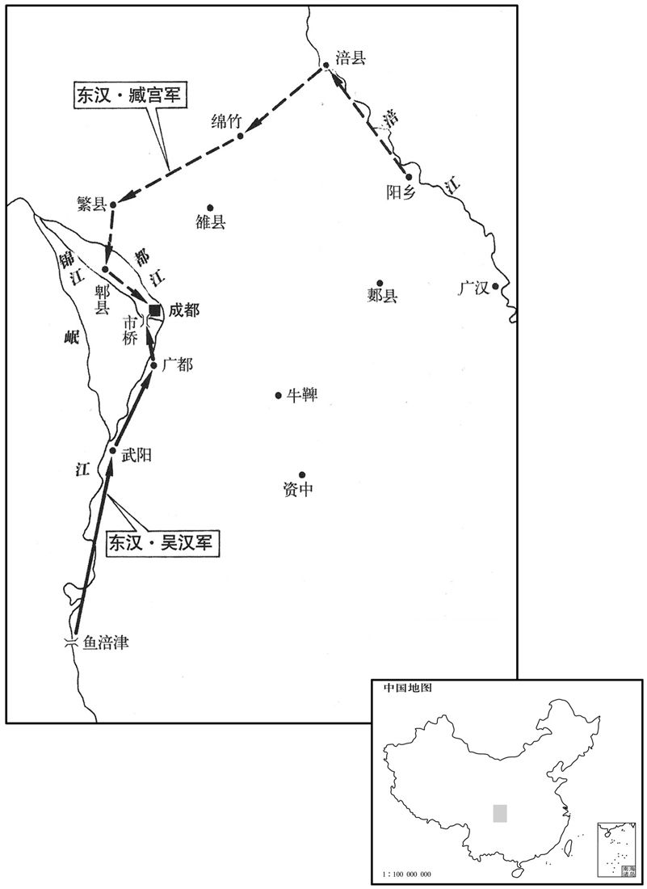
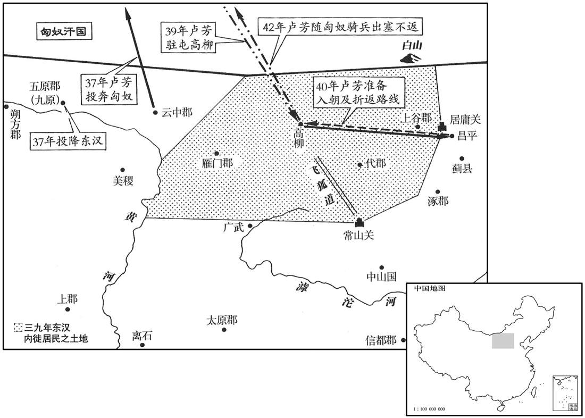
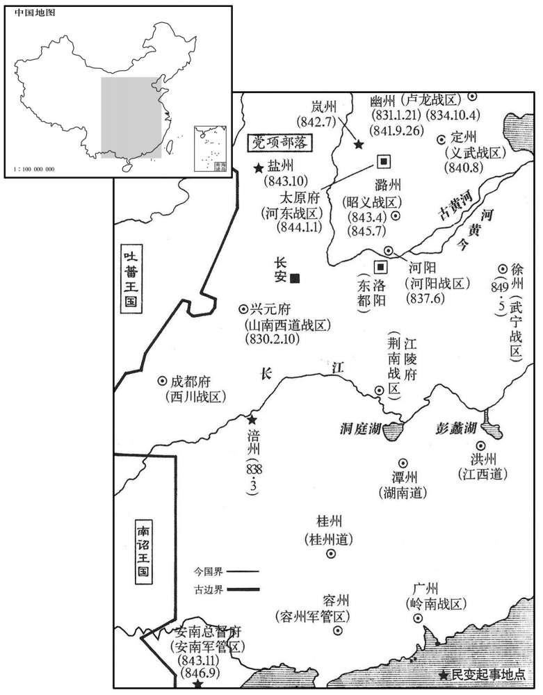
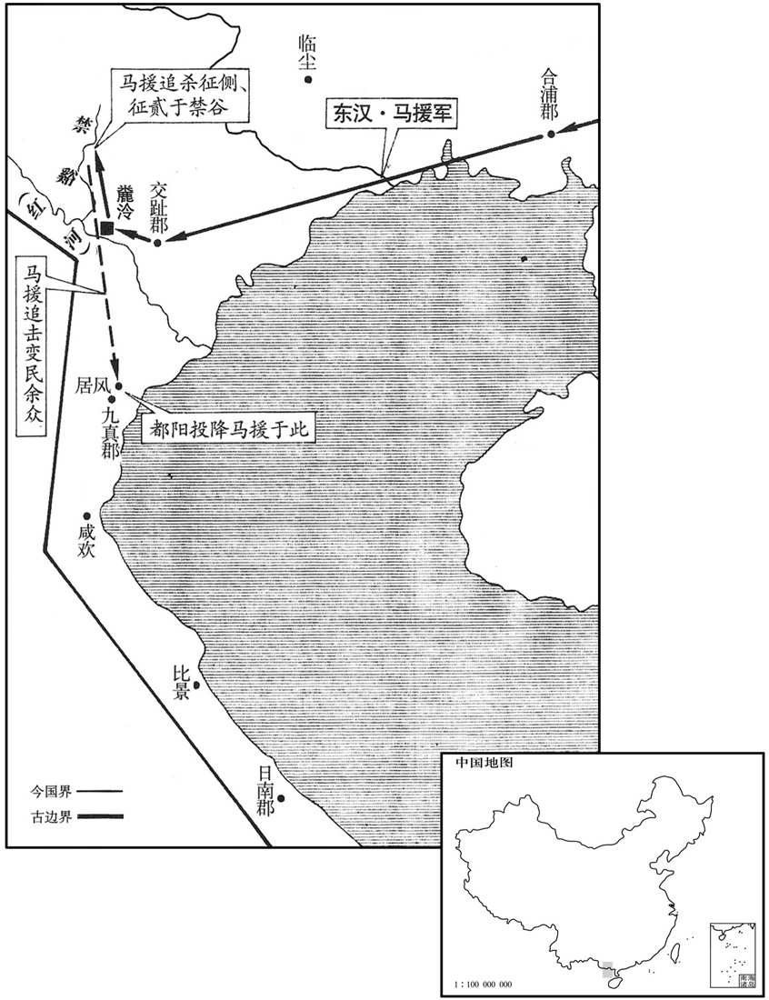
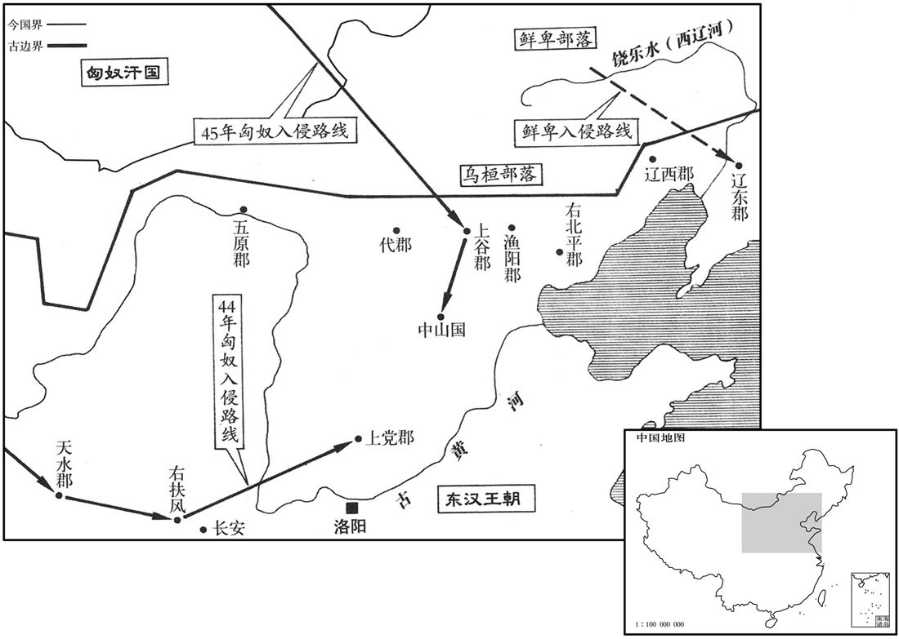
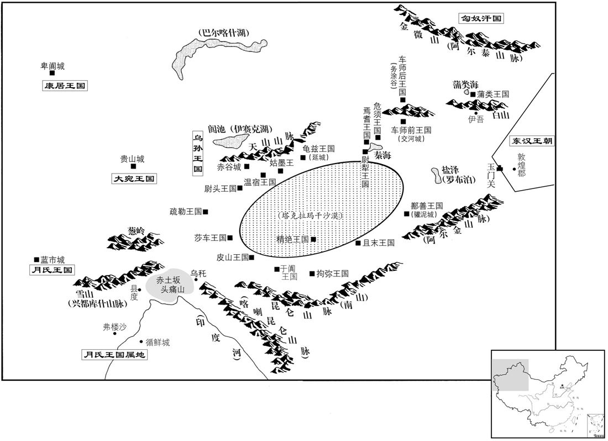

卷次与人物目录 / 卷43
资治通鉴 · 卷第四十三【汉纪三十五】
公元36年至公元46年 · 原文、白话与胡三省注
本页按胡注本编排保存全卷内容。白话采用本站所据译本，未可靠对应的内容另列说明；事件标题用于定位，并非原书文字。
本卷共119段原文，115段有译文对应，4段缺译或待核对。
卷第四十三【汉纪三十五】起柔兆涒滩（丙申），尽柔兆敦牂（丙午），凡十一年。
卷首原文与注释
世祖光武皇帝中之下
公元36年 · 汉世祖光武皇帝建武十二年
建武十二年〔（丙申、三六）〕
上传原文的注释括号有异常，字符原样保留；无法可靠划分的段落默认全文显示。
本年事件索引（现代整理）
春，正月，吴汉破公孙述将魏党、公孙永于鱼涪津，〔续汉书曰：犍为郡南安县有鱼涪津，在县北，临大江。南�之茪瞗G鱼涪津广数百步。涪，音浮。〕遂围武阳。述遣子伲史兴救之，汉迎击，破之，因入犍为界；诸县皆城守。诏汉直取广都，据其心腹。汉乃进军攻广都，拔之，〔武帝元朔二年，置广都县，属蜀郡。〕遣轻骑烧成都市桥。〔贤曰：市桥，即七星桥之一桥也。李膺益州记，冲星桥，旧市桥也，在今成都县西南四里。水经注：成都中，两江有七桥，西南石牛门外曰市桥。〕公孙述将帅恐惧，日夜离叛，述虽诛灭其家，犹不能禁。〔将，即亮翻。帅，所类翻。〕帝，必欲降之，〔降，户江翻；下同。〕又下诏谕述曰：「勿以来歙、岑彭受害自疑，〔二人受害，见上卷上年。歙，许及翻。〕今以时自诣，则宗族完全。诏书手记，不可数得。」〔数，所角翻。〕述终无降意。
春季，正月，吴汉在鱼涪津打败公孙述的将领魏党、公孙永，随后包围武阳县。公孙述派遣女婿史兴救援。吴汉迎击，打败史兴，于是进入犍为郡内。郡内各县都闭城坚守。刘秀命令吴汉径直夺取广都，占据敌人心腹。吴汉于是进军广都，占领该地，又派遣轻骑兵烧毁成都市桥。公孙述的将帅十分恐惧，日夜逃离叛变。尽管公孙述诛杀了叛离逃亡将领的全家，还是不能禁止。刘秀一定要公孙述投降，又一次下诏告诉公孙述说：“不要因来歙、岑彭两个人被害的事而自己疑虑，现在及时投降，家族就可以保全。诏书和亲笔信，不可能屡屡得到。”公孙述始终没有投降的意思。
秋，七月，冯骏拔江州，获田戎。
秋季，七月，东汉将军冯骏攻陷江州，俘获田戎。
帝戒吴汉曰：「成都十余万众，不可轻也。但坚据广都，待其来攻，勿与争锋。若不敢来，公转营迫之，须其力疲，乃可击也。」汉乘利，遂自将步骑二万进逼成都；去城十余里，阻江北〔张：「北」下脱「为」字。〕营，作浮桥，使副将武威将军刘尚将万余人屯于江南，为营相去二十余里。帝闻之大惊，让汉曰：「比敕公千条万端，何意临事勃乱！〔比，毗至翻。千条万端，言详细也。勃，与悖同。〕既轻敌深入，又与尚别营，事有缓急，不复相及。〔复，扶又翻。〕贼若出兵缀公，以大众攻尚，尚破，即败矣。幸无他者，〔言幸而无他虞，不至败也。〕急引兵还广都。」诏书未到，九月，述果使其大司徒谢丰、执金吾袁吉将众十许万，〔十许万者，约言之也。〕分为二十余营，出攻汉，使别将将万余人劫刘尚，令不得相救。汉与大战一日，兵败，走入壁，丰因围之。汉乃召诸将厉之曰：〔厉，勉也。毛晃曰：勉厉之厉，有修饰表起之意。〕「吾与诸君踰越险阻，转战千里，遂深入敌地，至其城下。而今与刘尚二处受围，势既不接，其祸难量；〔量，音良。〕欲潜师就尚于江南，并兵御之。若能同心一力，人自为战，大功可立；如其不然，败必无余。成败之机，在此一举。」诸将皆曰：「诺」于是飨士秣马，闭营三日不出，乃多树旛旗，使烟火不绝，夜，衔枚引兵与刘尚合军。丰等不觉，明日，乃分兵拒水北，自将攻江南。汉悉兵迎战，自旦至晡，〔日加申为晡；奔谟翻。〕遂大破之，斩丰、吉。于是引还广都，留刘尚拒述，具以状上，〔上，时掌翻。〕而深自谴责。帝报曰：「公还广都，甚得其宜，述必不敢略尚而击公也。〔贤曰：略，犹过也。〕若先攻尚，公从广都五十里悉步骑赴之，适当值其危困，破之必矣！」自是汉与述战于广都、成都之间，八战八克，遂军于其郭中。〔成都郭中也。〕
刘秀告诫吴汉说：“成都有十余万大军，不能轻视。只可坚守广都，等待敌人来攻，千万不要和敌人一争高下。如果敌人不敢来攻，你就移动军营逼迫他们，等到敌人精疲力尽，才可发起攻击。”而吴汉却乘着胜利，自己率领步、骑兵二万人进逼成都，离城十余里，隔江在北岸扎营，架浮桥，命副将武威将军刘尚率领一万余人在江南屯兵，军营相隔二十余里。刘秀听说以后十分震惊，责备吴汉说：“我不久前告诫你千言万语，怎料想事到临头就乱来！你既然轻敌深入，又和刘尚分别扎营，一旦发生危急，就不再能互相顾及。敌人如果出兵牵制你，用主力攻击刘尚，刘尚失败，你也就失败了。幸而还没有其他变故，你要火速率军返回广都。”诏书还未到达，已进入九月。公孙述果然派大司徒谢丰、执金吾袁吉率领军队大约十万人，分成二十余营，攻打吴汉；另派其他将领率领一万余人牵制刘尚，使他不能救援。吴汉大战了一整天，兵败，退回到营垒。谢丰趁机包围。于是吴汉召集将领们，勉励他们说：“我和你们各位越过险阻，转战千里，才深入敌境，进逼城下。可是现在和刘尚分别困在两地，既然不能互相援救，大祸不可估量。我准备悄悄率军到南岸和刘尚会师，合力抵抗敌人。如果能够同心协力，人人全力奋战，可以建立大功业；否则的话，定会一败涂地。成败的关键，在此一举。”将领们都说：“听您的吩咐！”于是犒劳士兵，喂饱战马，关闭营门，三天不出。并多多竖立旌旗，使烟火不断。入夜，吴汉悄悄率领军队与刘尚会合。谢丰等没有发觉。第二天，兵分两路，一路在江北据守，谢丰自己率军进攻江南。吴汉投入所有兵力迎战，从早晨打到下午，大败敌军，斩杀谢丰、袁吉。于是率军返回广都，留下刘尚抗拒公孙述。吴汉把情况一一向刘秀报告，深刻地谴责自己。刘秀回答说：“你回到广都，最恰当不过。公孙述必定不敢绕过刘尚而攻打你。他如果先攻打刘尚，你从广都救援，五十里的路程，出动全部步兵骑兵赶赴，这时正是敌军危险困顿的时候，打败他们是必定的！”自此，吴汉和公孙术在广都和成都之间交战，八战八胜，东汉大军终于进入成都外城。

臧宫拔鼦竹，破涪城，〔涪县，属广汉郡。贤曰：涪城，今鼦竹县。宋白曰：鼦州巴西县本汉涪县。〕斩公孙恢；〔恢，述弟也。〕复攻拔繁、郫，与吴汉会于成都。〔贤曰：繁，县名，属蜀郡。繁，江名，因以为县名，故城在今益州新繁县北。郫，县名，属蜀郡，故城在今益州郫县北。郫，音皮。〕
臧宫占领绵竹，又攻陷涪城，斩杀公孙恢。又接连攻克繁县、郫县，和吴汉大军在成都会师。
李通欲避权势，乞骸骨；积二岁，帝乃听上大司空印绶，〔上，时掌翻。〕以特进奉朝请。后有司奏封皇子，帝感通首创大谋，〔事见三十八卷王莽地皇三年。〕即日，封通少子雄为召陵侯。〔召，读与邵同。〕
李通想避开权势，请求退休。过了两年，刘秀才允许他交出大司空的印信绶带，要他以特进身分参加朝会。后来，有关部门上奏章请封皇子爵位，刘秀感念李通首先拥戴他谋划大事功绩，当天，封李通的幼子李雄为召陵侯。
公孙述困急，谓延岑曰：「事当奈何﹖」岑曰：「男儿当死中求生，可坐穷乎！财物易聚耳，〔易，以鼓翻。〕不宜有爱。」述乃悉散金帛，募敢死士五千余人以配岑。岑于市桥伪建旗得出。汉军余七日粮，除具船，欲遁去；蜀郡太守南阳张堪闻之，〔时成都未破，先署蜀郡太守以招怀蜀人。〕驰往见汉，说述必败、不宜退师之策。〔说，如字〕汉从之，乃示弱以挑敌。
两版字句有差异，建议核对原文。
公孙述危困窘迫，对延岑说：“事情应当怎么办？”延岑说：“男子汉应当死里逃生，怎么能坐着等死？财物容易聚敛，不应爱惜。”于是公孙述散发所有的黄金、绢帛，招募敢死队五千余人分配给延岑。延岑在成都市桥先布疑阵，树立旌旗，擂鼓向东汉军队挑战。同时悄悄派出奇兵绕到吴汉军队的后面，打败吴汉军。吴汉堕马落水，抓着马尾才脱离险境。吴汉的军队只剩下七天用的粮草，秘密准备战船，打算撤退。蜀郡太守南阳人张堪听说以后，火速前往求见吴汉，陈述公孙述必然灭亡、不应退军的策略。吴汉接受他的意见，于是故意示弱，挑动敌人出战。
冬，十一月，臧宫军咸阳门；〔臧宫传作「咸门」。贤曰：成都城北面东头门。此衍「阳」字。「东」，或作「西」。〕戊寅，述自将数万人攻汉，使延岑拒宫。大战，岑三合三胜，自旦及日中，军士不得食，并疲。汉因使护军高午、唐邯将锐卒数万击之，〔邯，户甘翻。〕述兵大乱；高午奔陈刺述，〔陈，读曰阵。刺，七亦翻。〕洞胸角马，左右舆入城。述以兵属延岑，〔属，之欲翻。〕其夜，死；明旦，延岑以城降。〔降，户江潘。〕辛巳，吴汉夷述妻子，尽灭公孙氏，并族延岑，遂放兵大掠，焚述宫室。帝闻之怒，以谴汉。又让刘尚曰：「城降三日，吏民从服，孩儿、老母，口以万数，一旦放兵纵火，闻之可为酸鼻。尚宗室子孙，更尝吏职，〔更，工衡翻。〕何忍行此！仰视天，俯视地，观放麑、啜羹，二者孰仁﹖〔韩子曰：孟孙猎得麑，使秦西巴持之。其母随而呼，秦西巴不忍，放而与其母。孟孙怒而逐西巴；既而复之，使傅其子。战国策曰：乐羊为将，为魏文侯攻中山。中山之君烹其子而遗之羹，乐羊坐于幕下而啜之，尽一杯。文侯谓褚师赞曰：「乐羊以我故而食其子之肉。」答曰：「子且食之，其谁不食！」既拔中山，文侯赏其功而疑其心。〕良失斩将吊民之义也！」〔将，即亮翻。〕
冬季，十一月，臧宫进驻成都咸阳门。戊寅（十八日），公孙述亲自率领数万人攻打吴汉，派延岑抗击臧宫。双方展开大战，延岑三战三胜，从早晨打到中午，官兵得不到饭食，全都感到疲劳。吴汉于是派遣护军高午、唐邯率领精锐部队数万人攻打公孙述，公孙述的军队大乱。高午直奔阵前，猛刺公孙述，公孙述胸被刺穿，掉下战马，左右将他抬入城中。公孙述把军队交给延岑，当夜去世。第二天，延岑献城投降。辛巳（二十一日），吴汉诛杀公孙述的妻子儿女，屠杀公孙氏家族，长幼不留。并将延岑灭族，然后纵兵大肆掳掠，焚烧公孙述宫室。刘秀听说以后大怒，因此谴责吴汉。又谴责刘尚说：“成都城投降已经三天，官民都服从归顺。连同孩子和母亲，人口数以万计，一旦纵兵放火，听到的人都会酸鼻掉泪。你是汉宗室子弟，又曾经当过官吏，怎么忍心做出这种事！仰视苍天，俯视大地，比较秦西巴释放小鹿、乐羊吃他儿子的肉羹，这两个人谁仁义？你们真是失掉了斩杀敌将、拯救百姓的道义！”
初，述征广汉李业为博士，业固称疾不起。〔业，平帝兀始中除为郎，会王莽居摄，以病去官，杜门不应州郡之命。王莽以业为酒士，病不之官，遂隐藏山谷，绝匿名。夫既不仕于莽，其肯为述起乎！〕述羞不能致，使大鸿胪尹融奉诏命以劫业，「若起则受公侯之位，不起赐以毒酒。」融譬旨曰：「方今天下分崩，孰知是非，而以区区之身试于不测之渊乎！朝廷贪慕名德，旷官缺位，于今七年，四时珍御，不以忘君；〔珍御，谓食珍之供进者。〕宜上奉知己，下为子孙，〔为，于伪翻；下同。〕身名俱全，不亦优乎！」业乃叹曰：「古人危邦不入，乱邦不居，〔论语载孔子之言也。〕为此故也。君子见危授命，〔论语载子张言也。〕何乃诱以高位重饵哉！」〔诱，音酉。〕融曰：「宜呼室家计之」业曰：「丈夫断之于心久矣，〔断，丁乱翻。〕何妻子之为！」遂饮毒而死。述耻有杀贤之名，遣使吊祠，赙赠百匹，业子翚逃，辞不受。〔翚，音晖。〕述又聘巴郡谯玄，〔姓谱：曹大夫食采于谯，因氏焉。玄，平帝元始四年为绣衣使者，分行天下，观省风俗。会莽居摄，弃使者车，归家隐遁。〕玄不诣；亦遣使者以毒药劫之，太守自诣玄庐，劝之行，玄曰：「保志全高，死亦奚恨！」遂受毒药。玄子瑛泣血叩头于太守，愿奉家钱千万以赎父死，太守为请，〔为，于伪翻。〕述许之。述又征蜀邵王皓、王嘉，〔平帝时，皓为美阳令，嘉为郎。王莽篡位，并弃官西归。〕恐其不至，先击其妻子，使者谓嘉曰：「速装，妻子可全。」对曰：「犬马犹识主，况于人乎！」〔言身为汉臣，岂不念故主乎！〕王皓先自刎，以首付使者。〔刎，武粉翻。〕述怒，遂诛皓家属。王嘉闻而叹曰：「后之哉！」乃对使者伏剑而死。犍为费贻不肯仕述，漆身为癞，阳狂避之。〔犍，居言翻。费，音秘，又父沸翻。〕同郡任永、冯信皆托青盲以辞征命。〔青盲者，其瞳子不精明，不能睹物。任，音壬。〕帝既平蜀，诏赠常少为太常，张隆为光禄勋。〔少、隆死见上卷上年。〕谯玄已卒，祠以中牢，〔师古曰：中牢，即少牢，谓羊、豕也。〕敕所在还其家钱，而表李业之板。征费贻、任永、冯信，会永、信病卒，独贻仕至合浦太守。〔郡国志：合浦郡，在雒阳南九千一百九十一里。〕上以述将程乌、李育有才干，皆擢用之。于是西土咸悦，莫不归心焉。
当初，公孙述征召广汉人李业当博士，李业坚持说有病而不肯接受。公孙述因不能把李业召来而感到羞耻，派大鸿胪尹融拿着诏书胁迫李业：“你如果接受职位就封公侯，如果不接受职位就赐予毒酒。”尹融解释说：“当今天下分崩离析，谁知道什么是是和非，而敢用区区身体去试探不可测的深渊？朝廷仰慕您的名望品德，给您留下官位，到现在已七年了。四季进贡的山珍美味，不会忘记送给您。您应该让奉知己，下为子孙，性命和名誉都可保全，这样做不是上策吗？”李业于是叹息说：“古人说，危险之邦不进入，混乱之邦不居住，我正是为了这个缘故。君子遇到危险而肯献出生命，为什么竟用高官厚禄引诱呢？”尹融说：“应该叫家人来商量。”李业说：“大丈夫决心断绝仕途已经很久了，为什么要和妻子儿女商量？”于是饮毒酒而死。公孙述耻于背上杀死贤才的名声，派使者吊丧祭祀，赠送一百疋绢帛助丧。李业的儿子李逃跑，推辞不接受。公孙述又聘请巴郡人谯玄，谯玄不接受任命。公孙述也派使者用毒药相威胁。太守亲自到谯玄家拜访，劝他动身，谯玄说：“坚持我的志向，保全我的气节，死又有何遗憾！”于是接受毒药。谯玄的儿子谯瑛通哭，向太守磕头，情愿捐献家产一千万钱，以赎父亲的死罪。太守为此请示公孙述，公孙述应允。公孙述又征召蜀郡人王皓、王嘉，怕他们不来，先拘捕他们的妻子儿女。使节对王嘉说：“赶快整理行装，妻子儿女可以保全。”王嘉回答说：“狗、马还认识主人，何况人呢？”王皓先自刎而死，使者用首级上报。公孙述大怒，于是诛杀王皓的家属。王嘉听说后叹息说：“我走在后面了！”于是面对使节用剑自杀而死。犍为郡人费贻，不肯做公孙述的官，身涂油漆成为癞疮，假装疯狂以逃避做官。同郡人任永、冯信全都假托患青光眼而辞谢征召。刘秀平定蜀地后，下诏追赠常少为太常，追赠张隆为光禄勋。谯玄已经去世，用羊、猪各一头祭祀，命令当地官府还给他家赎死的钱。在李业家所居地的里门刻石，表彰他的节操。征召费贻、任永、冯信，正巧任永、冯信病逝，只有费贻官至合浦太守。刘秀因公孙述的将领程乌、李育有才干，一齐提拔任用。于是蜀地上下喜悦，百姓无不归顺。
初，王莽以广汉文齐为益州太守，〔郡国志：益州郡，在雒阳西五千五百里。〕齐训农治兵，〔治，直之翻。〕降集群夷，甚得其和。〔降，户江翻；下同。〕公孙述时，六固守拒险，述拘其妻子，许以封侯，齐不降。闻上即位，间道遣使自闻。〔间，古苋翻。使，疏吏翻。〕蜀平，征为镇远将军，封成义侯。
起初，王莽任命广汉人文齐当益州郡太守。文齐劝导农民耕田，训练军队，招降各部夷人，郡内十分和平。公孙述时代，文齐据守险要。公孙述拘捕他的妻子儿女，向他许愿封做侯爵，文齐不肯投降。后来他听说刘秀即位，派人从小路到洛阳，为自己呈上奏章。蜀郡平定后，刘秀征召文齐当镇远将军，封成义侯。
十二月，辛卯，扬武将军马成行大司空事。
十二月辛卯（初一），杨武将军马成代理大司空职务。
是岁，参狼羌与诸种寇武都，〔参狼羌，无弋爰剑之后也。爰剑孙邛，将其种人南出赐支河曲之西数千里，其后子孙分别，各自为种：或为牦牛种，越巂羌是也；或为白马种，广汉羌是也；或为参狼种，武都羌是也。爰剑曾孙忍及弟舞留湟中，是为湟中诸种羌。种，章勇翻。〕陇西太守马援击破之，降万余人，于是陇右清静。援务开恩信，宽以待下，任吏以职，但总大体，而宾客故人日满其门。诸曹寺白外事，援辄曰：「此丞、掾之任，何足相烦！〔百官志：郡守有丞一人，有诸曹掾、史。有功曹史，主选署功劳；有五官掾，署功曹及诸曹事；其余有议曹、法曹、贼曹、决曹、金曹、仓曹等。掾，俞绢翻。〕颇哀老子，使得遨游，若大姓侵小民，黠吏不从令，〔黠，下八翻。〕此乃太守事耳。」傍县尝有报雠者，吏民惊言羌反，百姓奔入城，狄道长诣门，请闭城发兵。〔贤曰：狄道县，属陇西郡，今兰州县。余据陇西郡治狄道，故得诣门白太守。长，知两翻。〕援时与宾客饮，大笑曰：「虏何敢复犯我！晓狄道长，归守寺舍。〔贤曰：晓，喻也。寺舍，官舍也。〕良怖急者，可下伏！」〔怖，普布翻。〕后稍定，邵中服之。
这一年，参狼羌部落和其他羌人部落侵犯武都。陇西太守马援，击败羌军，一万余人投降，于是陇右一带平安无事。马援的宗旨是要对人有恩德，讲求信誉，对下宽厚，任用官吏职责分明，自己只总揽大局。因此，宾客故旧每天都挤满大门。各部门主管有时向他报告外面的公事，马援就说：“这是丞、掾分内的事，哪值得麻烦我！可怜可怜我这老头子，让我能够游乐玩耍。如果豪强大姓侵犯小民，或者狡猾的官吏枉法，这才是太守的事。”邻县曾有人报私仇，官民震惊，传言羌人反叛，百姓跑到城内。狄道县长上门，请求关闭城门征调军队。当时马援正和宾客喝酒，大笑说：“羌人怎么敢再来侵犯我？告诉狄道县长，回去守在官舍，害怕得太厉害的话，可以伏在床底下。”后来，情况逐渐安定，全郡人都佩服马援。
诏：「边吏力不足战则守，追虏料敌，不拘以逗留法。」〔贤曰：汉法，军行逗留畏譩者斩。追虏或近或远，量敌进退，不拘以军法，直取胜敌为务。
本段缺少可靠对应白话，原文完整保留；未使用生成译文。
山桑节侯王常、牟平烈侯取况、东光成侯取纯皆薨。〔谥法：好廉自克曰节；有功安民曰烈。贺琛曰：佐相克终曰成；惇庞淳固曰成。〕况疾病，乘舆数自临幸，复以弇弟广、举并为中郎将。〔乘，绳证翻。数，所角翻。复，扶又翻。〕弇兄弟六人，〔弇、舒、国、广、举、霸，兄弟六人。〕皆垂青紫，省侍医药，〔省，悉景翻。〕当世以为荣。
山桑节侯王常、牟平烈侯耿况、东光成侯耿纯都已去世。耿况患病时，刘秀好几次亲自探望，又任命耿的弟弟耿广、耿举同时担任中郎将。耿兄弟六人，全都身佩青紫色印信绶带，在病榻前控视、侍奉汤药，当世认为是荣耀。
卢芳与匈奴、乌桓连兵，数寇边。帝遣骠骑大将军杜茂等将兵镇守北边，治飞狐道，〔治飞狐道以通赵、魏应援北边之兵。〕筑亭障，修烽燧，凡与匈奴、乌桓大小数十百战，终不能克。
卢芳和匈奴、乌桓的军队联合，多次侵犯边境。刘秀派遣骠骑大将军杜茂等率军镇守北方边境，整修飞狐道，修筑碉堡，建造烽火台。和匈奴、乌桓大大小小共打了数十上百次战斗，始终不能取胜。
上诏窦融与五郡太守入朝。融等奉诏而行，官属宾客相随，驾乘千余两，马牛羊被野。〔乘，绳证翻。两，音亮。被，皮义翻。〕既至，诣城门，上印绶。〔上，时掌翻。〕诏遣使者还侯印绶，引见，赏赐恩宠，倾动京师。寻拜融冀州牧。〔冀州部魏郡、巨鹿、常山、中山、信都、河间、清河、赵国、勃海。〕又以梁统为太中大夫，姑臧长孔奋为武都郡丞。姑臧在河西最为富饶，〔姑臧县，属武威郡。刘昫曰：姑臧县，秦月氏戎所处，匈奴名盖藏城，语讹为姑臧城。长，知两翻。〕天下未定，士多不修检操，居县者不盈数月，辄致丰积；奋在职四年，力行清洁，为众所笑，以为身处脂膏不能自润。〔说文：戴角者脂，无角者膏。处，昌吕翻。〕及从融入朝，诸守、令财货连谷，弥竟川泽；〔谷，古谷翻。〕唯奋无资，单车就路，帝以是赏之。
刘秀诏令窦融和五郡太守到京都洛阳朝见。窦融等接到诏令后动身前往，官属和兵客跟随，车队有一千多辆，马牛羊遍野。到达以后，窦融前往城门，奉上印信绶带。刘秀下诏派使者发还侯爵印信绶带。接见窦融，对他的赏赐恩宠轰动了洛阳。不久，刘秀任命窦融当冀州牧。又任命梁统当太中大夫，姑臧县长孔奋当武都郡丞。姑臧县在河西是最富饶的地方，当时全国还未平定，士人多不检点，没有节操，在县长的位置上不满几个月就积累起大量财富。孔奋在职四年，行为清正廉洁，被众人所讥笑，认为他身在油脂之中却不能滋润自己。等到跟随窦融到京都洛阳，各郡守、县令的钱财货物装了一车又一车，布满平川洼泽，唯独孔奋没有财产，只乘一辆车上路。刘秀因此奖赏他。
帝以睢阳令任延为武威太守，〔睢，音虽。任，音壬。〕帝亲见，戒之曰：「善事上官，无失名誉。」延对曰：「臣闻忠臣不和，和臣不忠。〔考异曰：延传作「忠臣不私，私臣不忠」，按高峻小史作「忠臣不和，和臣不忠」，意思为长，又与上语相应。今从之。〕履正奉公，臣子之节；上下雷同，非陛下之福。〔曲礼曰：毋雷同。郑氏注曰：雷之发声，物无不同时应者；人之言当各由己，不当然也。〕善事上官，臣不敢奉诏。」帝叹息曰：「卿言是也！」
刘秀任命睢阳县令任廷当武威太守。刘秀亲自召见，告诫他说：“好好侍奉长官，不要丢掉名誉。”任延回答说：“我听说忠诚的臣子与人不和睦，与人和睦的臣子不忠诚。履行正道，奉公守法，是臣子的节操。如果下级对上级随声附和，那不是陛下的福分。陛下说要好好侍奉长官，我不敢接受。”刘秀叹息说：“你说得对呀！”
译本中未与胡注本可靠对应的内容
以下另列供核对版本差异，不并入胡注本正文。
译本所附古文
[8]诏：“边吏力不足战则守，追虏料敌，不拘以逗留法。”
译本白话
刘秀下诏：“边疆官吏如果没有力量交战就采取守势；追击敌人时要估量敌人的情况，或远或近，不要拘泥于军法中的‘逗留法’。”
公元37年 · 汉世祖光武皇帝建武十三年
十三年〔（丁酉、三七）〕
上传原文的注释括号有异常，字符原样保留；无法可靠划分的段落默认全文显示。
本年事件索引（现代整理）
春，正月，庚申，大司徒侯霸薨。
春季，正月庚申（初一），大司徒侯霸去世。
戊子，诏曰：「郡国献异味，其令太官勿复受！〔百官志、太官令一人，秩六百石，掌御膳饮食。复，扶又翻。〕远方口实所以荐宗庙，自如旧制。」〔汉官仪曰：口实，膳羞之事也。〕时异国有献名马者，日行千里，又进宝剑，价值百金。诏以剑赐骑士，马驾鼓车。〔舆服志：乘舆法驾后有金钲、黄钺、黄门鼓车。〕上不喜听音乐，〔喜，许既翻。〕手不持珠玉。尝出猎，车驾夜还，上东门候汝南郅恽拒关不开。〔贤曰：上东门，洛阳城东面北头门也。恽，于粉翻。〕上令从者见面于门间，〔见，贤遍翻。〕恽曰：「火明辽远。」遂不受诏。上乃回，从东中门入，〔贤曰：东面中门也。〕明日，恽上书谏曰：「昔文王不敢盘于游田，以万民惟正之供。〔尚书无逸之辞。盘，乐也。〕而陛下远猎山林，夜以继昼，其如社稷宗庙何！」书奏，赐恽布百匹，贬东中门候为参封尉。〔雒阳十二城门，每门候一人，秩六百石。参封县，属琅邪郡。〕
戊子（二十九日），刘秀下诏：“各郡、封国进贡山珍海味，太官不能再接受。远方进献祭祀宗庙食物，则依照旧例。”当时外国有进献良马的，可日行千里；又有人进献宝剑，价值一百两黄金。刘秀下诏，把宝剑赏赐给骑士，让良马去驾皇家的鼓车。刘秀平素不喜欢听音乐，手不持珍珠宝玉。有一次外出打猎，车驾夜里返回，上东门候汝南人郅恽拒绝开门。刘秀命随从在门缝间和郅恽见面，郅恽说：“灯火太远，看不清是谁。”于是不接受诏命。刘秀只好返回，从东中门进城。第二天，郅恽上书规劝说：“从前，周文王不敢沉溺于狩猎，全身心地为万民服务。可是陛下远到山林中打猎，夜以继日，这对社稷和宗庙有什么好处呢？”奏章呈上后，刘秀赏赐郅恽一百匹布，贬逐东中门候当参封县尉。
二月，遣捕虏将军马武屯虖沱河以备匈奴。〔虖，读曰呼。〕
二月，刘秀派遣捕虏将军马武屯军滹沱河，以防备匈奴。
卢芳攻云中，久不下。其将随昱留守九原，欲胁芳来降；芳知之，与十余骑亡入匈奴，其众尽归随昱，昱乃诣阙降。诏拜昱五原太守，封镌胡侯。〔镌，子全翻。〕
卢芳进攻云中，久攻不下。卢芳的将领随昱在九原留守，想胁迫卢芳投降东汉。卢芳得知后，与十余名骑兵卫士逃入匈奴地区。卢芳的部众全都属随昱所有，随昱于是到洛阳投降。刘秀下诏，任命随昱当五原太守，封为镌胡侯。
朱祜奏：「古者人臣受封，不加王爵。」丙辰，诏长沙王兴、真定王得、河间王邵、中山王茂皆降爵为侯：〔高帝封诸侯王，其子孙无有与汉俱存亡者。文帝封梁王、城阳、菑川，景帝封河间、长沙、中山、常山、昭帝封广阳、广陵、高密，此数国至王莽篡汉而废。但封长沙、真定、河间、中山者，与帝同出于景帝也。长沙，舂陵之大宗；真定，常山王宪之后改封者，今复降篾为侯，以服属已疏也。〕丁巳，以赵王良为赵公，太原王章为齐公，鲁王兴为鲁公。〔良，帝叔父；章、兴，帝兄子也。〕是时，宗室及绝国封侯者凡一百三十七人。富平侯张纯，安世之四世孙也，历王莽世，以敦谨守约保全前封；建武初，先来诣阙，为侯如故。于是有司奏：「列侯非宗室不宜复国。」上曰：「张纯宿卫十有余年，其勿废！」更封武始侯，食富平之半。〔贤曰：武始县，属魏郡；富平县，属平原郡。〕
朱祜上奏章说：“古时候，臣子受封，不是直系皇族，不封王爵。”丙辰（二十七日），刘秀下诏，长沙王刘兴、真定王刘得、河间王刘邵、中山王刘茂，都降爵为侯。丁巳（二十八日），改封赵王刘良为赵公，太原王刘章为齐公，鲁王刘兴为鲁公。这时，刘氏皇族以及原封国撤销而由后世继承爵位的，共一百三十七人。富平侯张纯，是张安世的四世孙，曾经历王莽时代，因敦厚谨慎守法而能保全爵位。建武初年，张纯先来归附，照旧为侯。现在主管部门上奏：“侯爵中除非刘姓宗室，不应恢复封国。”刘秀说：“张纯在宫禁中值宿警卫已十余年，不要废除。”改封为武始侯，封地为富平县的一半。
庚午，以绍嘉公孔安为宋公，承休公姬常为卫公。〔平帝元始四年，改绍嘉公曰宋公，承休公曰郑公，今又改郑曰卫。〕
庚午（疑误），封绍嘉公孔安为宋公，承休公姬常为卫公。
三月，章未，以沛郡太守韩歆为大司徒。〔郡国志，沛郡在雒阳东南一千二百里。〕
三月辛未（十二日），刘秀任命沛郡太守韩歆当大司徒。
丙子，行大司空马成复为扬武将军。
丙子（十七日），代理大司空职务的马成又担任杨武将军。
吴汉自蜀振旅而还，至宛，〔宛，于元翻。〕诏过家上耱，赐谷二万斛；〔上，时掌翻。〕夏四月，至京师。于是大飨将士、功臣，增邑更封〔更，工衡翻。〕凡三百六十五人，其外戚、恩泽封者四十五人。定封邓禹为高密侯，食四县；〔禹食昌安、夷安、淳于、高密四县。贤曰：高密，国名，今密州县。余据西汉以高密为王国，东汉为侯国，属北海国，贤所云盖侯国也。〕李通为固始侯；贾复为胶东侯，食六县；〔固始侯国，属汝南郡；故寝县也，帝更名。史记正义曰：孙叔敖以寝丘土寝薄，取为封邑。李通又慕叔敖受邑，光武嘉之，改名困始。胶东，西汉以为王国，帝以为侯国，并属北海，食郁秩、壮武、下密、即墨、挺胡、观阳，凡六县。〕余各有差。已殁者益封其子孙，或更封支庶。
吴汉从蜀地整军返回，到达宛城。刘秀下诏，准许他到家乡祭祀祖坟，赐谷二万斛。夏季，四月，吴汉回到洛阳。于是刘秀举行盛大宴会犒赏将士。有功之臣封土调整增加的，共计三百六十五人。外戚及加恩分封的，有四十五人。封邓禹为高密侯，辖地四个县。封李通为固始侯、贾复为胶东侯，辖地都是六个县。其他侯爵的封地各有等差。对已经死去的，加封他的子孙，或改封其宗族旁支。
帝在兵间久，厌武事，且知天下疲耗，思乐息肩，自陇、蜀平后，非警急，未尝复言军旅。〔乐，音洛。复，扶又翻。〕皇太子尝问攻战之事，帝曰：「昔卫灵公问陈，孔子不对。〔论语：卫灵公问陈于孔子，孔子曰：「俎豆之事，则尝闻之矣；军旅之事，未之学也。」陈，读曰阵。〕此非尔所及。」邓禹、贾复知帝偃干戈，修文德，不欲功臣拥众京师，乃去甲兵，敦儒学。〔去，羌吕翻。〕帝亦思念，欲完功臣爵土，不令以吏职为过，〔恐其以职事有过而失爵邑也。〕遂罢左、右将军官。耿弇等亦上大将军、将军印绶，〔上，时掌翻。〕皆以列侯就第，加位特进，奉朝请。〔朝，直遥翻。请，才性翻，又如字。〕
刘秀在军旅中时间很长，厌倦战争，而且知道天下百姓疲惫贫困，渴望休息。自从陇、蜀平定之后，除非有危险紧急的情况，未曾再谈论军事。皇太子曾向他请教打仗的事，刘秀说：“从前卫灵公请教战争的事，孔子不肯答复。这不是你应该问的。”邓禹、贾复知道刘秀决定放下武器，用礼乐教化进行统治，不愿功臣们身在洛阳而拥有重兵，于是二人交出军权，潜心研究儒家经典。刘秀也考虑到功臣们今后的去向，想保全他们的爵位和封地，不让他们因为职务而有过失，于是撤销左将军、右将军的官职。耿等也交出大将军、将军的印信绶带，全都以侯爵的身份离开朝廷，回到自己的宅第。他们被加以特进之衔，定期参加朝会。
邓禹内行淳备，〔行，下孟翻。〕有子十三人，各使守一艺，修整闺门，教养子孙，皆可以为后世法，资用国邑，不修产利。〔凡用度皆资于国邑，不事生产、作业及营利也。〕
邓禹性格敦厚，有十三个儿子，让他们各自研习一种技能。他治家的严谨，对子孙的教育，都可以作为后世效法的榜样。家里的开支取自封地的收入，不从其他产业营利。
贾复为人刚毅方直，多大节，既还私第，阖门养威重。朱祜等荐复宜为宰相，帝方以吏事责三公，故功臣并不用。是时，列侯唯高密、固始、胶东三侯与公卿参议国家大事，恩遇甚厚。帝虽制御功臣，而每能回答，〔回容，犹今言回护也。贤曰：回，曲也，曲法以容也。〕宥其小失。远方贡珍甘，必先偏赐诸侯，而太官无余，故皆保其福禄，无诛谴者。
贾复刚毅正直，有大节。回到宅第以后，关起门来修身养性。朱祜等举荐贾复，认为他适宜做宰相，而刘秀正责成三公整顿官吏制度，所以一律不任用功臣。这时，侯爵中只有高密侯邓禹、固始侯李通、胶东侯贾复三人和三公九卿一起议论国家大事，恩宠特别深厚。刘秀虽然控制功臣，但往往能维护包容他们，原谅他们的小过失。远方进贡珍味美食，一定先赏赐所有诸侯，而太官都没有多余的，因此功臣全都保持他们的爵位财产，没有被诛杀或谴退的。
益州传送公孙述瞽师、郊庙乐器、葆车、舆辇，于是法物始备。〔贤曰：瞽，无目之人也，为乐师，取其无所见，于音审也。郊庙之器，樽彝之属也。乐器，锺磬之属也。葆车，谓上建羽葆也；合聚五采羽，名为葆。孔颖达曰：羽葆者，以鸟羽注于柄头如盖，谓之羽葆，谓盖也。舆者，车之总名也。辇者，驾人以行。法物，谓大驾卤簿仪式也。时草创未暇，今得之始备。余谓法物，即上乐器、葆车、舆辇之类。传，直恋翻。〕时兵革既息，天下少事，文书调役，〔调，徒吊翻。〕务从简寡，至乃十存一焉。
益州把公孙述的盲人乐师、祭祀用的乐器、用五采羽毛编成篷盖的车，以及帝王后妃专用的各种车辆等，送到洛阳，于是帝王仪伏所用的器物才开始完备。当时战事已经平息，天下少事，各种公文的往来和差役的调遣，力求从简从少，只有从前的十分之一。
甲寅，以冀州牧窦融为大司空。融自以非旧臣，一旦入朝，〔朝，直遥翻；下同。〕在功臣之右，每朝〔【章：十二行本「朝」作「召」；乙十一行本同。】〕会进见，容貌辞气，卑恭已甚，帝以此愈亲厚之。融小心，久不自安，数辞爵位，〔数，所角翻。〕上疏曰：「臣融有子，朝夕教导以经艺，不令观天文，见谶记，〔谶，楚谮翻。〕诚欲令恭肃畏事，〔恂恂守道，不愿其有才能，何况乃当传以连城广土，享故诸侯王国哉！」因复请间求见，〔复，扶又翻。间，古苋翻。见，贤遍翻；下以意推。〕帝不许。后朝罢，逡巡席后，〔逡巡，郄退貌。〕帝知欲有让，遂使左右传出。〔传旨使融出也。〕他日会见，迎诏融曰：「日者知公欲让职还土，〔贤曰：日者，犹往日也。〕故命公暑热且自便；今相见，宜论他事，勿得复言。」融不〔【章：十二行本「不」上有「乃」字；孔本同。】〕敢重陈请。〔重，直用翻。〕
本段缺少可靠对应白话，原文完整保留；未使用生成译文。
五月，匈奴寇河东。
五月，匈奴侵犯河东郡。
译本中未与胡注本可靠对应的内容
以下另列供核对版本差异，不并入胡注本正文。
译本所附古文
[11]甲寅，以冀州牧窦融为大司空。融自以非旧臣，一旦入朝，在功臣之右，每朝会进见，容貌辞气，卑恭已甚，帝以此愈亲厚之。融小心，久不自安，数辞爵位，上疏曰：“臣融有子，朝夕教导以经艺，不令观天文，见谶记，诚欲令恭肃畏事，恂恂守道，不愿其有才能，何况乃当传以连城广土，享故诸侯王国哉！”因复请间求见，帝不许。后朝罢，逡巡席后，帝知欲有让，遂使右左传出。他日会见，迎诏融曰：“日者知公欲让职还土，故命公暑热且自便；今相见，宜论他事，勿得复言。”融不敢重陈请。
译本白话
甲寅（疑误），刘秀任命冀州牧窦融当大司空。窦融因自己不是刘秀的旧臣，一旦入朝，官位在那些功臣之上，所以朝会晋见，神情和言辞都十分卑谦，刘秀因此更加亲近厚待他。窦融小心翼翼，内心却总是不安，几次请求辞去官职和爵位。他上书说：“我有儿子，每天早晚用儒家经典教导他。不让他学习天文，不准他研究预知祸福的谶记，只想让他恭敬怕事，恪守正道，不愿他有才能，何况竟要把连接几个城市的广大土地传给他，让他享受继承诸侯王国呢！”因此又请求单独晋见刘秀。刘秀不准。后来，有一次朝会完毕，窦融在席位后面徘徊，刘秀知道他要谈辞职的事，就让左右传旨催他离开。几天以后，有一天刘秀见到窦融，对他说：“那天，我知道你要辞职，归还封土，所以让左右告诉你，天气太热，暂且去自己凉快一下。今天见面，应当谈论别的 事，不能再说辞职。”于是窦融不敢再提这件事。
公元38年 · 汉世祖光武皇帝建武十四年
十四年〔（戊戌、三八）〕
夏，邛谷王任贵遣使上三年计，即授越巂太守。〔郡国志：越巂郡，在雒阳西四千八百里。巂，音髓。邛，渠容翻。任，音壬。上，时掌翻。〕
夏季，邛王任贵派使者呈递三年的计簿，报告人口、赋税、治安等情况。刘秀任命任贵当越太守。

本年形势与背景参考图
秋，会稽大疫。〔郡国志：会稽郡，在雒阳东二千八百里。会，古外翻。〕
秋季，会稽郡瘟疫流行。
莎车王〔张：「莎」上脱「冬」字。〕贤、鄯善王安皆遣使奉献。〔莎，素禾翻。鄯，时战翻。〕西域苦匈奴重敛，〔敛，力赡翻。〕皆愿属汉，复置都护；上以中国新定，不许。
莎车王贤、鄯善王安都派使者进贡。西域各国被匈奴的大量征敛所苦，都愿归属汉朝，愿朝廷重新设置都护。刘秀因为中原刚刚平定，不肯应许。
太中大夫梁统上疏曰：「臣窃见元帝初元五年，轻殊死刑三十四事，哀帝建平元年，轻殊死刑八十一事；其四十二事手杀人者，减死一等。自是之后，着为常准，故人轻犯法，吏易杀人。〔易，以豉翻。〕臣闻立君之道，仁义为主，仁者爱人，义者正理。爱人以除残为务，正理以去乱为心；〔去，羌吕翻。〕刑罚在衷，无取于轻。〔衷，中心；适也。〕高帝受命，约令定律，诚得其宜，〔高帝入关，约法三章，后萧何定律九章。〕文帝唯除省肉刑、相坐之法，〔文帝元年，除数孥相坐法；十三年，除肉刑。〕自余皆率由旧章。至哀、平继体，即位日浅，听断尚寡。〔断，丁乱翻。〕丞相王嘉轻为穿凿，亏除先帝旧约成律，〔按嘉傅及刑法志并无其事，统与嘉时代相接，所引固不妄矣，但班固略而不载也。〕数年之间百有余事，或不便于理，或厌民心，〔厌，于叶翻。〕谨表其尤害于体者，傅奏于左。〔体，政体也。傅，音附。〕愿陛下宣诏有司，详择其善，定不易之典！」事下公卿。〔下，遐嫁翻。〕光禄勋杜林奏曰：「大汉初兴，蠲除苛政，海内欢欣；及至其后，渐以滋章。〔孝子曰：法令滋章，盗贼多有。〕果桃菜茹之馈，集以成赃，小事无妨于义，以为大戮。至于法不能禁，令不能止，上下相遁，为敝弥深。〔贤曰：遁，犹回避也。前书曰：上下相匿，以文避法焉。〕臣愚以为宜如旧制，不合翻移。」统复上言曰：〔复，扶又翻。〕「臣之所奏，非曰严刑。经曰：『爰制百姓，于刑之衷。』〔尚书吕刑之言。〕衷之为言，不轻不重之谓也。自高祖至于孝宣，海内称治，〔治，直吏翻。〕至初元、建平而盗贼浸多，皆刑罚不衷，愚人易犯之所致也。〔易，以豉翻。〕由此观之，则刑轻之作，反生大患，惠加奸轨，而害及良善也！」事寝，不报。
太中大夫梁统上书说：“我看到，元帝初元五年，死罪减刑的有三十四件。哀帝建平元年，死罪减刑的有八十一件，其中四十二件是亲手杀人，而作减死一等判决。从此以后，成为惯例，所以人们轻率犯法，官吏轻视杀人。我听说做君主的道义，是以仁义为主。仁是爱人，义是坚持原则。爱人就要以除暴为目的，坚持原则就要以消灭祸乱为中心。设置刑罚在于适中，不能偏轻。高祖承受天命，制订法令，确实都很恰当。文帝只取消了肉刑和连坐法，其余全都遵循旧制。到哀帝、平帝继位，在位时间短，处理案子还很少。丞相王嘉轻率地穿凿附会，删减先辈君王的既定法律规章，几年之间有一百余件事，有的不合道理，有的不得民心。我谨把其中对大体为害最严重的，附在后边，向您陈奏。希望陛下命令主管部门，仔细选择好的律条，制订一部不容更改的法典。”刘秀把梁统的奏章交给公卿讨论。光禄勋杜林上奏说：“汉朝初兴时，废除苛政，四海之内欢欣鼓舞。等到以后，法令逐渐增多，连果桃、菜蔬之类的馈赠，都集中起来成为赃物。小的事不妨害大义，也要判处死刑。以至于发展到有法不禁，有令不止，上下互相掩护逃避，弊病更加严重。我认为应沿袭原有的法令条文，不宜于重新制订修改。”梁统又上奏说：“我所奏请的，并不是说要有严刑峻法。《书经》上说：‘治理百姓，刑法要适中。’适中的意思是不轻也不重。从高祖到宣帝，天下被称为治平，到元帝、哀帝时，盗贼渐渐增多，都是因为刑罚不适中，愚昧的人轻视犯法所造成的。由此看来，减轻刑罚的作法，反而酿成大祸。对奸诈不轨的人施恩，就是伤害善良的人。”这件事情被搁置，没有再交付讨论。
公元39年 · 汉世祖光武皇帝建武十五年
十五年〔（己亥、三九）〕
上传原文的注释括号有异常，字符原样保留；无法可靠划分的段落默认全文显示。
本年事件索引（现代整理）
春，正月，辛丑，大司徒韩歆免。歆好直〔好，呼到翻。〕言，无隐讳，帝每不能容。歆于上前证岁饥凶，指天画地，言甚刚切，故�之K归田里。帝犹不释，复遣使宣诏责之；〔复，扶又翻。〕歆及子婴皆自杀。歆素有重名，死非其罪，众多不厌；〔厌，一叶翻。〕帝乃追赐钱谷，以成礼葬之。〔贤曰：成礼，具礼也；言不以非命而降其葬礼。〕
春季，正月辛丑（二十三日），免去大司徒韩歆的职务。韩歆性格刚直，说话不隐讳，刘秀往往不能容忍。韩歆在刘秀面前有根有据地说天下将有严重的饥馑荒年出现，并指天划地，言辞非常激烈，因此被免职，回归故里。韩歆走后，刘秀仍然不能消气，又派使者宣读诏书责备他。韩歆和儿子韩婴全都自杀。韩歆平素享有重名，无罪被逼死，人多不服，刘秀于是追赠钱谷，以完整的礼仪安葬他。
史家评论 · 原文及其白话
臣光曰：昔高宗命说曰：「若药弗瞑眩，厥疾弗瘳。」〔说，传说也，音悦。孔安国曰：如服药必瞑眩极，其病乃除，欲其出切言以自警。陆德明音瞑，莫遍翻。眩，玄遍翻；徐：又呼县翻。瞑眩，困极也。
本段缺少可靠对应白话，原文完整保留；未使用生成译文。
史家评论 · 原文及其白话
夫切直之言，非人臣之利，乃国家之福也。是以人君日夜求之，唯惧弗得闻。惜乎，以光武之世而韩歆用直谏死，岂不为仁明之累哉！〔累，力瑞翻。〕
两版字句有差异，建议核对原文。
臣司马光曰：从前，商王武丁对傅说说：“如果药物不能使人感到昏眩，疾病就不能痊愈。”激烈直率的话，对臣子不利，却是国家的福分。所以君王日夜寻求这样的话，唯恐听不到。可惜呵，在光武帝时代，韩韵竟因直言进谏而死，岂不是仁义圣明的缺欠吗！
丁未，有星孛于昴。〔昴七星，西方之宿也，主狱事；又为旄头，胡星也。昴、毕间为天街，黄道之所经也。孛，蒲内翻。〕
丁未（二十九日），有异星出现在昂宿。
以汝南太守欧阳歙为大司徒。〔郡国志：汝南郡，在雒阳南六百五十里。歙，许及翻。〕
刘秀任命汝南太守欧阳歙当大司徒。
匈奴寇钞日盛，〔钞，楚交翻。〕州郡不能禁。二月，遣吴汉率马成、马武等北击匈奴，徙鴈门、代郡、上谷吏民六万余口置居庸、常山关以东，以避胡寇。〔郡国志：鴈门郡，在雒阳北一千五百里。代郡，在雒阳东北一千五百里。前书曰：「代郡有常山关。上谷郡居庸县有关。〕匈奴左部遂复转居塞内，〔复，扶又翻。〕朝廷患之，增缘边兵，部数千人。〔每部各数千人也。〕
匈奴的侵扰掠夺一天比一天厉害，州、郡无力禁止。二月，派遣吴汉率领马成、马武等北上打击匈奴。迁徙雁门郡、代郡、上谷郡的官民六万余人，安置到居庸关、常山关以东，以避开匈奴的骚扰。匈奴左部于是又转移到边 塞以内居住。朝廷为此担忧，在边塞增派武装部队，每个据点达数千人。
夏，四月，丁巳，封皇子辅为右翊公，英为楚公，阳为东海公，康为济南公，〔济，子礼翻。〕苍为东平公，延为淮阳公，荆为山阳公，衡为临淮公，焉为左翊公，京为琅邪公。〔邪，音耶。〕癸丑，追谥兄演为齐武公，兄仲为鲁哀公。帝感演功业不就，〔事见三十九卷更始元年。〕抚育二子章、兴，恩爱甚笃；以其少贵，〔少，诗照翻。〕欲令亲吏事，使章试守平阴令，兴缑氏今；〔平阴、缑氏二县，皆属河南尹。缑，工侯翻。〕其后章迁梁郡太守，〔梁郡，在雒阳东南八百本十里。〕兴迁弘农太守。〔郡国志：弘农郡，在雒阳西南四百五十里。〕
夏季，四月丁巳（十一日），刘秀封皇子刘辅为右翊公，刘英为楚公，刘阳为东海公，刘康为济南公，刘苍为东平公，刘延为淮阳公，刘荆为山阳公，刘衡为临淮公，刘焉为左翊公，刘京为琅邪公。癸丑（十七日），刘秀追封大哥刘为齐武公，二哥刘仲为鲁哀公。刘秀感念大哥刘功业未成。抚育刘的两个儿子刘章、刘兴，十分宠爱。因为他们年轻而地位尊贵，想让他们亲身体验了解行政事务，派刘章暂时代理平阴县令，刘兴暂时代理缑氏县令。后来刘章升任梁郡太守，刘兴升任弘农太守。
帝以天下垦田多不以实自占，〔占，之赡翻。〕又户口、年纪互有增减，乃诏下州郡检核。〔核者，考其实也。下，户稼翻。〕于是刺史、太守多为诈巧，苟以度田为名，聚民田中，并度庐屋、里落，民遮道啼呼；〔度，徒洛翻。呼，火故翻。〕或优饶豪右，侵刻羸弱。〔羸，伦为翻。〕
刘秀因为全国的耕地面积自行申报，多不据实，并且户口、年龄都有增减，于是下诏，令各州郡进行检查核实。当时州刺史、郡太守多行诡诈，投机取巧，他们胡乱地以丈量土地为名，把农民聚集到田中，连房屋、乡里村落也一并丈量，百姓挡在道路上啼哭呼喊；有的官吏优待豪强，侵害苛待贫弱的百姓。
时诸郡各遣使奏事，帝见陈留吏牍上有书，视之云：「颍川、弘农可问，河南、南阳不可问。」〔宋白曰：汉割秦南阳、河南二郡之西境置弘农郡，义取弘大农桑为名。〕帝诘吏由趣，〔由，从也，问是书之所从来也。趣，向也，问是书之意，其所向为何如也。〕吏不肯服，抵言「于长寿街上得之。」〔抵，欺也。贤曰：长寿街在雒阳城中。〕帝怒。时东海公阳年十二，在幄后言曰：「吏受邵敕，〔敕，教戒也。〕当欲以垦田相方耳。」〔敕，教也，戒也。相方，求问其垦田之数以相比也。〕帝曰：「即如此，何故言河南、南阳不可问﹖」对曰：「河南帝城，多近臣；南阳帝乡，多近亲；田宅踰制，不可为准。」帝令虎贲将诘问吏，〔虎贲将，虎贲中郎将也。将，即亮翻。〕吏乃实首服，如东海公对。〔首，式救翻。〕上由是益奇爱阳。〔为立阳为太子张本。〕
当时各郡各自派使者呈递奏章，刘秀发现陈留郡官吏的简牍上面有字，看到上面写的是：“颖川、弘农可以问，河南、南阳不可问。”刘秀责问陈留的官吏是怎么回事，官吏不肯承认，抵赖说“是在长寿街上捡到的。”刘秀大怒。当时东海公刘阳只有十二岁，在帐子后面说：“那是官吏接受郡守下的指令，将要同其他郡丈量土地的情况作比较。”刘秀说：“既然这样，为什么说河南、南阳不可问？”刘阳回答说：“河南是京都，有很多陛下亲近的臣僚；南阳是陛下的故乡，有很多皇亲国戚。他们的田地住宅都超过规定，不能做标准。”刘秀命虎贲中郎将责问陈留官吏，那个官吏才据实承认，正像东海公刘阳所回答的一样。刘秀于是更加喜爱刘阳。认为他不同寻常。
遣谒者考实二千石长吏阿枉不平者。〔长，知两翻。〕冬，十一月，甲戌，大司徒歙坐前为汝南太守，度田不实，赃罪千余万，下狱。〔下遐稼翻。〕歙世授尚书，八世为博士，〔自欧阳生传伏生尚书，至歙八世，皆为博士。〕诸生守阙为歙求哀者千余人，〔为，于伪翻。〕至有自髡剔者。〔毛晃曰：剃发曰髡，尽及身毛曰剔。〕平原礼震，年十七，〔礼，姓也。左传，卫有大夫礼孔。〕求代歙死；帝竟不赦，歙死狱中。
刘秀派遣谒者对二千石官员中循私枉法的行为进行考察核实。冬季，十一月甲戌（初一），有大司徒欧阳歙因先前在汝南太守任内丈量土地作弊，获赃款一千余万，被逮捕下狱。欧阳歙家世代教授《尚书》，有八代人是博士。学生门徒守在宫门外替欧阳歙求情的有一千余人，甚至有人把自己的头发剃掉，自处髡刑。平原人礼震才十七岁，请求替欧阳歙去死。刘秀终究未赦免，欧阳歙死在狱中。
十二月，庚午，以关内侯戴涉为大司徒。
十二月庚午（二十七日），刘秀任命关内侯戴涉当大司徒。
卢芳自匈奴复入居高柳。〔复，扶又翻。〕
卢芳从匈奴地区又返回内地，住在高柳。
是岁，骠骑大将军杜茂坐使军吏杀人，免。使扬武将军马成代茂，缮治障塞，十里一候，以备匈奴。〔治，直之翻。〕使骑都尉张堪领杜茂营，击破匈奴于高柳。〔杜佑曰：云州，治云中县，县界有高柳城。阚骃曰：高柳，在狋氏县北百三十里。郦道元曰：高柳县故城，旧代郡治。高柳在代中，其山重峦迭巘，霞举云高，连山隐隐，东出辽塞。〕拜堪渔阳太守。堪视事八年，匈奴不敢犯塞，劝民耕稼，以致殷富。百姓歌曰：「桑无附枝，麦秀两岐。〔【章：十二行本「秀」作「穗」，「岐」从「止」；乙十一行本均同。蚕月既采桑，斫去繁枝，留其特长者，则来年桑叶茂盛。麦率一茎一穗，罕有两岐者，故以为瑞。】〕张君为政，乐不可支！」〔乐，音洛。〕
这年，骠骑大将军杜茂因指使军官杀人而被免职。命杨武将军马成代替杜茂的职务。马成修缮要塞，每隔十里有一个烽燧，以防备匈奴进犯。刘秀命骑都尉张堪率领杜茂的部队，在高柳击败匈奴。任命张堪为渔阳太守。张堪任职八年，匈奴不敢进犯边塞。他鼓励百姓从事农业生产，使他们生活富足。百姓用歌颂他：“桑树无繁枝，麦子两穗多，张君当太守，百姓真安乐。”
交趾麊泠县雒将女子征侧，甚雄勇，〔师古曰：麊泠，音麋零。交州外域记曰：交趾昔未有郡县之时，土地有雒田，民垦食其田，因名为雒民，设雒王、雒侯，主诸郡县。县有雒将，铜印青绶。宋白曰：峰州，汉麊泠县地。〕交趾太守苏定以法绳之，征侧忿怨。
交趾泠县雒将的女儿征侧，十分层悍勇猛。交趾太守苏定用法律约束她，征侧怨恨。
译本中未与胡注本可靠对应的内容
以下另列供核对版本差异，不并入胡注本正文。
译本所附古文
[10]安平侯盖延薨。
译本白话
安平侯盖延去世。
公元40年 · 汉世祖光武皇帝建武十六年
十六年〔（庚子、四○）〕
上传原文的注释括号有异常，字符原样保留；无法可靠划分的段落默认全文显示。
春，二月，征侧与甚未征贰反，九真、日南、合浦蛮俚皆应之，〔郡国志：日南郡，秦象郡地，在雒阳南万三千四百里。贤曰：俚，蛮之别号，今呼为俚人。未白曰：爱州，汉九真郡，治胥浦县。驩州，汉日南郡，治朱吾县。〕凡略六十五城，自立为王，都麊泠。交趾刺史及诸太守仅得自守。
春季，二月，征侧和她的妹妹征贰反叛。九真、日南，合浦的蛮人全都起来响应，共攻占六十五个城。征侧自立为王，建都泠。交趾郡刺史和各郡太守仅能自守。

本年形势与背景参考图
三月，辛丑晦，日有食之。
三月，辛丑晦（三十日），出现日食。
秋，九月，河南尹张伋及诸郡守十余人皆坐度田不实，下狱死。后上从容谓虎贲中郎将马援曰：〔武帝置期门郎，掌执兵送从；平帝元始元年，更名虎贲郎，置中郎将。汉仪：虎贲骑，鹖冠，虎文单衣。度，徒洛翻。从，千容翻。贲，章奔。〕「吾甚恨前杀守、相多也！」〔守，式又翻。相，息亮翻。〕对曰：「死得其罪，何多之有！但死者既往，不可复生也！」〔复，扶又翻。〕上大笑。
秋季，九月，河南尹张和各郡太守十余人，都因丈量土地中作弊，被逮捕入狱处死。后来，刘秀语气和缓地对虎贲中郎将马援说：“我十分悔恨先前杀了很多太守和相。”马援回答说：“他们的死和罪过相当，有什么多不
多呢？只是已经死了的人，不能再复生了。”刘秀大笑。
郡国群盗处处并起，郡县追讨，到则解散，去复屯结，青、徐、幽、冀四州尤甚。冬十月，遣使者下郡国，〔下，遐稼翻。〕听群盗自相纠擿，〔贤曰：擿，犹发也，他狄翻。〕五人共斩一人者，除其罪；吏虽逗留回避故纵者，皆勿问，听以禽讨为效。其牧守令长坐界内有盗贼而不收捕者，又以畏譩捐城委守者，皆不以为负，贤曰：委守，谓弃其所守也。负，罪负心。譩，而恋翻，又奴乱翻。〕但取获贼多少为殿最，〔殿，丁甸翻。〕唯蔽匿者乃罪之。于是更相追捕，〔更，工衡翻。〕贼并解散，徙其魁帅于他郡，赋田受禀，〔禀，给也。帅，所类翻。〕使安生业。自是牛马放牧不收，邑门不闭。
各郡、封国的盗贼处处并起，郡县追击征剿，军队到时盗贼就散开，军队离开后又重新屯聚集结，青州、徐州、幽州、冀州四个州尤其厉害。冬季，十月，朝廷派使节到各郡、封国，听凭盗贼们自相检举攻击。五个人共同斩杀一个人，免除五个人的罪。即使官吏畏怯逗留、逃避、故意放纵盗贼，也一律不追究，允许以擒贼讨贼立功。州、郡太守、县令县长在所辖界内有盗贼而不拘捕，或因畏惧懦弱弃城放弃职责的，全都不予处罚，只看捕获盗贼的多少来排列先后名次。仅对窝藏盗贼的人才加罪。于是，大捕盗贼，盗贼全部解散。把他们的头领迁徙到其他郡，给他们土地，供应粮食，使他们安心生产。从此以后，放牧的牛马晚上不用牵回，城门夜间不用关闭，一片升平景象。
卢芳与闵堪使使请降，帝立芳为代王，堪为代相，赐缯二万匹，〔缯，慈陵翻。〕因使和集匈奴。芳上疏谢，自陈思望阙庭；诏报芳朝明年正月。〔朝，直遥翻；下同。〕
卢芳和闵堪派使者请求投降。刘秀封卢芳为代王，任命闵堪当代相，赏赐绸缎二万匹，让他为朝廷安抚匈奴，建立和睦的关系。卢芳上书谢恩，并说自己思念想往朝廷。刘秀下诏回答卢芳，让他明年正月来朝见。
初，匈奴闻汉购求芳，贪得财帛，故遣芳还降。既而芳以自归为功，不称匈奴所遣，单于复耻言其计，〔复，扶又翻；下同。〕故赏遂不行。由是大恨，入寇尤深。
起初，匈奴听说汉朝悬赏捉拿卢芳，因贪图得到财帛，所以送回卢芳让他投降。后来卢芳以自动归附为功，不说是匈奴所遣，匈奴单于也耻于提到当初的谋划，因而汉朝没有进行赏赐。匈奴从此大为愤恨，入境侵扰得更厉害。
马援奏，宜如旧铸五铢钱，〔废五铢钱事见三十七卷王莽始建国元年。〕上从之；天下赖其便。
马援上奏建议，应当按旧币制铸造五铢钱。刘秀赞同。百姓都因这一措施而感到方便。
译本中未与胡注本可靠对应的内容
以下另列供核对版本差异，不并入胡注本正文。
译本所附古文
[7]卢芳入朝，南及昌平，有诏止，令更朝明岁。
译本白话
卢芳入朝，南下到达昌平。刘秀下诏命他停止，改为明年朝见。
公元41年 · 汉世祖光武皇帝建武十七年
十七年〔（辛丑、四一）〕
本年事件索引（现代整理）
春，正月，赵孝公良薨。〔谥法：慈惠爱亲曰孝。〕初，怀县大姓李子春二孙杀人，怀令赵熹穷治其奸，〔熹，许记翻，又读曰熹。治，直之翻。〕二孙自杀，收击子春。京师贵戚为请者数十，〔为，于伪翻。〕熹终不听。及良病，上临视之，问所欲言，良曰：「素与李子春厚，令犯罪，怀令赵熹欲杀之，愿乞其命。」帝曰：「史奉法律，不可枉也。更道他所欲。」良无复言。〔复，扶又翻。〕既薨，上追思良，乃贳出子春。〔贳，时夜翻，赦也。〕迁熹为平原太守。〔郡国志：平原郡，在雒阳北千三百里。〕
春季，正月，赵孝公刘良去世。当初，怀县大姓李子春的两个孙子杀人，怀县县令赵深入追究凶犯，两个孙子自杀，李子春被捕入狱。洛阳的皇亲国戚有数十人替李子春说情，赵始终不答应。及至刘良病重，刘秀到他家探望，问他有什么话要说。刘良说：“我一向和李子春交往深厚。现在他犯罪，怀县县令赵要杀他，我愿乞求饶他一命。”刘秀说：“官吏尊奉法律，不能歪曲。请另外说其他的愿望。”刘良不再说话。刘良去世后，刘秀追念刘良，才赦免释放了李子春，提拔赵为平原太守。
二月，乙未晦，日有食之。〔考异曰：帝纪：「乙亥晦」，袁纪「乙未」。据长历，三月丙申朔。帝纪误。〕
二月乙未晦（三十日），出现日食。
夏，四月，乙卯，上行幸章陵；〔章陵，故春陵，帝更名。〕五月，乙卯，还宫。
夏季，四月乙卯（初二），刘秀前往章陵。五月乙卯（二十一日），返回洛阳皇宫。
六月，癸巳，临淮怀公衡薨。
六月癸巳（二十九日），临淮怀公刘衡去世。
妖贼李广攻没皖城，〔贤曰：皖，县名，属庐江郡，故城在今舒州；有皖水。妖，于骄翻。皖，音下板翻。〕遣虎贲中郎将马援、骠骑将军段志讨之。秋，九月，破皖城，斩李广。
盗贼李广攻陷皖城。朝廷派虎贲中郎将马援、骠骑将军段志征讨。秋季，九月，攻破皖城，斩杀李广。
郭后宠衰，数怀怨怼，〔数，所角翻。怼，直类翻。〕上怒之。冬，十月，幸巳，废皇后郭氏，立贵人阴氏为皇后。诏曰：「异常之事，非国休福，不得上寿称庆。」郅恽言于帝曰：「臣闻夫妇之好，〔好，呼到翻。〕父不得之于子，况臣能得之于君乎！〔贤曰：得，犹制御也。司马迁曰：妃匹之爱，君不能得之臣，父不能得之子，况卑下乎！是臣所不敢言。虽然，愿陛下念其可否之计，无令天下有议社稷而已。」帝曰：「恽善恕己量主，〔量，音良。〕知我必不有所左右而轻天下也！」贤曰：左右，犹向背也；言其齐等。〕帝进郭后子右翊公辅为中山王，以常山郡益中山国，〔郡国志：中山国，在雒阳北一千四百里。〕郭后为中山太后；其余九国公皆为王。
两版字句有差异，建议核对原文。
郭皇后失宠，常怀有怨恨，刘秀对她很生气。冬季，十月辛巳（十九日），废黜皇后郭氏，立贵人阴氏皇后。下诏说：“这是一件异常的事，不是国家之福，不准祝福庆贺。”郅恽对刘秀说：“我听说夫妇之间的私情，做父亲的尚且不能干涉儿子，何况我们做臣子的，能够干涉君王吗？所以，我不敢说什么。尽管如此，希望陛下考虑是否可行，不要让天下人议论社稷而已。”刘秀说：“你善于用自己的心揣度君王，知道我一定会适当处理，不会轻视天下人的反应。”刘秀封郭后的儿子右翊公刘辅为中山王，把常山郡并入中山国。封郭后为中山太后。其余九位皇子，全从公爵晋封为王。

甲申，帝幸章陵，修园庙，祠旧宅，观田庐，置酒作乐，赏赐。时宗室诸母因酣悦相与语曰：「文叔少时谨信，〔少，诗照翻。〕与人不款曲，唯直柔耳，今乃能如此！」帝闻之，大笑曰：「吾治天下，亦欲以柔道行之。」〔治，直之翻。〕十二月，还自章陵。
十月甲申（二十二日），刘秀前往章陵。修葺先人墓园祭庙，祭祀旧宅，巡视田地农舍，摆设酒宴，演奏乐曲，进行赏赐。当时刘氏宗室的伯母、姑母、婶娘们因喝酒喝得酣畅高兴，在一起说：“刘秀小时候谨慎守信，和人交往不殷勤应酬，仅知柔和而已，今天竟能如此！”刘秀听说以后，大笑说：“我治理天下，也要推行柔和之道。”十二月，刘秀从章陵回到洛阳。
是岁，莎车王贤复遣使奉献，请都护；〔复，扶又翻。〕帝赐贤西域都护印绶及车旗、黄金、锦绣。郭煌太守裴遵上言：「夷狄不可假以大权；〔唐氏族志：但益之封于属乡，因以为氏；后徙封解邑，乃去「邑」从「衣」。郡国志，敦煌郡，在雒阳西五千里。敦，徒门翻。〕又令诸国失望。」诏书数还都护印绶，更赐贤以汉大将军印绶；其使不肯易，遵迫夺之。贤由是始恨，而犹诈称大都护，移书诸国，诸国悉服属焉。
这一年，莎车王贤又派使者进贡，请求设置都护。刘秀赐给贤西域都护印信绶带，以及车辆、旗帜、黄金、绵绣。敦煌太守裴遵上书说：“对于夷狄，不可以授给他们大权，而且这样做会使其他各国失望。”刘秀于是下诏书收回都护印信、绶带，把大将军印信、绶带改赐给贤。莎车使者不肯交换，裴遵强行夺回。贤从此开始怨恨，而仍诈称是西域都护，向西域各国发送文书，各国全都服从、归附。
匈奴、鲜卑、赤山乌桓数连兵入塞，〔鲜卑，亦东胡也，别依鲜卑山，故因号焉。汉初为冒顿所破，远窜辽东塞外，与乌桓相接，未尝通中国，至是始入塞为寇。乌桓传：赤山在辽东西北数千里。数，所角翻；下同。〕杀略吏民；诏拜襄贲令祭肜为辽东太守。〔贤曰：襄贲，县名，属东海郡，故城在今沂州临沂县南。贲，音肥。郡国志：辽东郡，在雒阳东北三千六百里。祭，则介翻。「肜」，当作「彤」。〕肜有勇力，虏每犯塞，常为士卒锋，数破走之。肜，遵之从弟也。〔从，才用翻。〕
匈奴、鲜卑、赤山乌桓多次联合军队攻入边塞，屠杀官吏百姓，大肆掠夺。刘秀下诏任命襄贲令祭肜当辽东太守。祭肜勇猛有力，每当蛮族侵犯边境，他总是身先士卒，多次打败击退来犯者。祭肜是祭遵的堂弟。
征侧等寇乱连年，诏长沙、合浦、交趾具车船，修道桥，通障溪，〔障，与嶂同，山也。山溪为阻，则治桥道以通之。〕储粮谷。拜马援为伏波将军，以扶乐侯刘隆为副，〔贤曰：扶乐，县名，属九真郡。余谓贤说误矣，九真郡未尝有扶乐县。隆初封亢父侯，以度田不实免，次年，封为扶乐乡侯。则扶乐乃乡名，非县名，贤考之不详也。水经注：扶乐城在扶沟县，砂水径其北。〕南击交趾。
征侧等连年为寇作乱，朝廷命长沙、合浦、交趾等郡准备车辆船只，修筑道路、桥梁，打通山间溪谷的道路，储备粮食。任命马援当伏波将军、扶乐侯刘隆当副统帅，南征交趾。
公元42年 · 汉世祖光武皇帝建武十八年
十八年〔（壬寅、四二）〕
上传原文的注释括号有异常，字符原样保留；无法可靠划分的段落默认全文显示。
本年事件索引（现代整理）
二月，〔张：「二月」上脱「春」字。〕蜀郡守将史歆反，攻太守张穆，穆踰城走；宕渠杨伟等起兵以应歆。〔宕渠县，属巴郡。宕渠故城，在今渠州流江县东北七十里。贤曰：宕渠，山名，因以名县，故城在今渠州流江县东北，俗名车骑城是也。师古曰：宕，音徒浪翻。〕帝遣吴汉等将万余人讨之。
二月，蜀郡守将史歆反叛，攻打太守张穆，张穆越城逃跑。宕渠人杨伟等起兵响应史歆。刘秀派遣吴汉等率领一万余人进行讨伐。
甲寅，上行幸长安；三月，幸蒲，〔蒲县，属河东郡。〕祠后土。
甲寅（疑误），刘秀前往长安。三月，到达蒲坂，祭祀后土神。
马援缘海而进，随山刊道千余里，至浪泊上，〔浪泊，在交趾封溪县界。按马援既平交趾，奏分西里置封溪、望海二县。水经曰：叶榆水过交趾麊泠县北，分为五水，络交趾郡中，其南水自麊泠县东，径封溪县北，又东径浪泊。马援以其地高，自西里进屯焉。未白曰：马援自九真以南，随山刊木，至日南。〕与征侧等战，大破之，追至禁溪，〔「禁溪」，水经注及越志皆作「金溪」。其地盖在麊泠县西南。水经注曰：征侧走入金溪究，三岁乃得之。竺芝扶南记曰：水溪濑中谓之究。贤曰：其志枔岑州新昌县也。余按唐志：新昌县属丰州，「岑」字误。〕贼遂散走。
马援缘着大海推进，沿山开道一千余里，抵达浪泊。同征侧等交战，大败征侧，追到禁，征侧部众于是四散奔逃。

夏，四月，甲戌，车驾还宫。
夏季，四月甲戌（十五日），刘秀返回洛阳。
戊申，上行幸河内；戊子，还宫。
戊申（疑误），刘秀前往河内郡。戊子（二十九日），返回洛阳皇宫。
五月，旱。
五月，发生旱灾。
卢芳自昌平还，内自疑惧，遂复反，〔复，扶又翻。〕与闵相攻连月。匈奴遣数百骑迎芳出塞。芳留匈奴中十余年，病死。
卢芳从昌平返回后，内心疑虑恐惧，于是再度反叛，同闵堪互相攻击，连战数月。匈奴派数百名骑兵接卢芳到塞外。卢芳留在匈奴，十余年后，病死。
吴汉发广汉、巴、蜀三郡兵，〔郡国志：广汉郡，在雒阳西三千里。巴郡，在雒阳西二千七百里。蜀郡，在雒阳西三千一百里。〕围成都百余日，秋，七月，拔之，斩史歆等。汉乃乘桴〔编竹木以渡水，大曰筏，小曰桴。〕沿江下巴郡，杨伟等惶恐解散。汉诛其渠帅，徒其党与数百家于南郡、长沙而还。〔帅，所类翻。还，从宣翻，又奴字。〕
吴汉征调广汉、巴、蜀三郡的部队，包围成都一百余天。秋季，七月，攻陷成都，斩杀史歆等。吴汉于是乘筏顺江而下，抵达巴郡。扬伟等惊恐瓦解。吴汉诛杀了叛军首领，把他们的党羽数百家迁到南郡、长沙，然后返回。
冬，十月，庚辰，上幸宜城；〔贤曰：宜城县，属南郡，楚之鄢邑也，故城在今襄州率道县南。〕还，祠章陵；十二月，还宫。
冬季，十月庚辰（二十四日），刘秀前往宜城。返回时，在章陵祭祀父祖。十二月，回到洛阳。
是岁，罢州牧，置刺史。〔置州牧事始见三十二卷成帝绥和元年；至哀帝建平二年，复为刺史；元筹二年，复为牧。
本段缺少可靠对应白话，原文完整保留；未使用生成译文。
五官中郎将张纯与太仆朱浮奏议：「礼，为人子，事大宗，降其私亲。当除今亲庙四，以先帝四庙代之。」大司徒涉等奏「立元、成、哀、平四庙。」上自以昭穆次第，当为元帝后。〔昭，读为続；音韶。〕
五官中郎将张纯和太仆朱浮上奏上建议：“按照礼制，既做某人的儿子，就应尊奉大宗，降低自己父母亲的地位。应当撤除现在章陵的四座父祖祭庙，用陛下即位前四位先帝的祭庙代替。”大司徒戴涉等上奏：“请建立元帝、成帝、哀帝、平帝四座祭庙。”刘秀认为，按照宗族的辈份，他应是元帝刘的后代。
译本中未与胡注本可靠对应的内容
以下另列供核对版本差异，不并入胡注本正文。
译本所附古文
[10]是岁，罢州牧，置刺史。
译本白话
这一年，撤销州牧，设置刺史。
公元43年 · 汉世祖光武皇帝建武十九年
十九年〔（癸卯、四三）〕
本年事件索引（现代整理）
春，正月，庚子，追尊宣帝曰中宗。始祠昭帝、元帝于太庙，〔贤曰：汉官仪曰：光武第虽十二，于父子之次，于成帝为兄弟，于哀帝为诸父，于平帝为祖父，皆不可为之后。上至元帝于光武为父，故上继元帝而为九代。故河图云：赤九会昌，谓光武也。然则宣帝为祖，昭帝为曾祖，故追尊及祠之。〕成帝、哀帝、平帝于长安，舂陵节侯以以于章陵；其长安、章陵，皆太守、令、长侍祠。〔祭祀志曰：时诏曰：「宗庙处所未定，且祫祭高庙，其成、哀、平且祠祭长安故高庙。其南阳舂陵，岁时且各因故园庙祭祀。园庙去太守治所远者，在所令、长行太守事侍祠。」如淳曰：宗庙在章陵者，南阳太守称使者往祭；不使侯王祭者，诸侯不得祖天子。凡临祭宗庙，皆为侍祠。〕
春季，正月庚子（十五日），刘秀追尊宣帝刘询为中宗。开始在太庙祭祀昭帝、元帝。在长安祭祠成帝、哀帝、平帝，在章陵祭祀刘秀高祖父舂陵节侯刘买及以下的先人。长安、章陵两地的祭庙，全由当地太守、县令、县长负责侍奉祭祀。
马援斩征侧、征贰。
马援诛斩征侧、征贰姐妹。
妖贼单臣、传镇等相聚入原武城，〔妖，于骄翻。单，音善。原武县属河南尹。〕自称将军。诏太中大夫臧宫将兵围之，数攻不下，〔数，所角翻。〕士卒死伤。帝召公卿、诸侯王问方略，皆曰：「宜重其购赏。」东海王阳独曰：「妖巫相劫，势无久立，其中必有悔欲亡者，但外围急，不得走耳。宜小挺缓，令得逃亡，〔贤曰：挺，解也。余据礼记月令，挺重囚。挺，宽也，音待鼎翻。〕逃亡，则一亭长足以禽矣。」帝然之，即敕宫彻围缓贼，贼众分散。夏四月，拔原武，斩臣、镇等。
贼寇单臣、傅镇等聚众进入原武城，自称将军。刘秀下诏，命太中大夫臧宫率兵包围原武城，屡次攻城不克，士兵有不少伤亡。刘秀召集公卿、诸王询问方略，众人都说：“应该提高悬赏价格。”唯独皇子东海王刘阳说：“这群人被妖师、巫师所胁迫，势必不能长久。其中一定有后悔想逃跑的，只是外面围攻太急，不能逃走罢了。应该稍稍放松，让他们能够逃亡。逃亡溃散，有一个亭长就可以对付了。”刘秀认为说得很对，命臧宫撤围，放走贼兵，于是贼军四散。夏季，四月，攻陷原武城，斩杀单臣、傅镇等。
马援进击征侧余党都阳等，至居风，降之；〔贤曰：居风，县名，属九真郡，今爱州。交州记曰：居风有山，出金牛，往往夜见，光耀十里。山有风门，常有风。〕峤南悉平。〔贤曰：峤，岭峤也。尔雅曰：山锐而高曰峤；居庙翻。考异曰：援传作「都羊」，帝纪作「都阳」，今从纪又帝纪：「十八年四月，遣援击交趾。十九年四月，斩侧、贰等，因击都阳等，降之。」援传：「十七年，拜伏波将军，讨侧、贰。十八年春，军至浪泊，明年正月，斩侧、贰。」盖纪之所书者，援奏破侧、贰及传侧、贰首至雒之时也。沈怀远南越志云：「征侧奔入金溪穴中，二年乃得之。」援传近是，今从之。〕援与越人申明旧制以约束之，自后骆越奉行马将军故事。〔贤曰：骆者，越别名。林邑记曰：日南、卢容、浦过、铜鼓外越。铜鼓即骆越也；有铜鼓，因得其名。马援取其鼓以铸铜马。〕
马援进军追击征侧余党都阳等，追到居风，都阳等投降，峤南全部平定。马援向越人申明原有的制度，约束他们。从此以后，南越土著一直奉行马援的规定。
闰月，戊申，进赵、齐、鲁三公爵皆为王。
闰四月戊申（二十五日），赵公刘栩、齐公刘章、鲁公刘兴都晋封为王。
郭后既废，太子强意不自安。郅恽说太子曰：「久处疑位，上违孝道，下近危殆，〔说，输芮翻。处，昌吕翻。近，其靳翻。〕不如辞位以奉养母氏。」太子从之，数因左右及诸王陈其恳诚，愿备藩国。〔数，所角翻。〕上不忍，迟回者数岁。六月，戊申，诏曰：「春秋之义，立子以贵。〔春秋公羊传曰：立嫡以长不以贤，立子以贵不以长。桓公何以贵﹖母贵也。母贵则子贵，予以母贵，母以予贵。〕东海王阳，皇后之子，宜承大统。皇太子强，崇执谦退，愿备藩国，父子之情，重久违之。〔重，难也。〕其以强为东海王，立阳为皇太子，改名庄。」
郭皇后被废，皇太子刘强心不自安。郅恽劝告太子说：“长久地处在不稳定的位置上，上违背孝道，下靠近危险。不如辞去太子之位，以奉养母亲。”刘强听从劝告。多次托刘秀左右亲信和诸王表达他的诚意，希望退居藩国。刘秀不忍心这样做，迟疑徘徊了几年。本年六月戊申（二十六日），刘秀下诏：“《春秋》大义，选立继承人，以身份高贵为标准。东海王刘阳是皇后之子，应该继承皇位。皇太子刘强，坚决谦让，愿退居藩国。出于父子之情，难以长久违背他的愿望。今封刘强为东海王；立刘阳为皇太子，改名刘庄。”
袁宏论曰：夫建太子，所以重宗统，一民心也，非有大恶于天下，不可移也。世祖中兴汉业，宜遵正道以为后法。今太子之德未亏于外，内宠既多，嫡子迁位，可谓失矣。然东海归藩，谦恭之心弥亮；明帝承统，友于之情愈笃；〔论语：孔子曰：惟孝友于兄弟。〕虽长幼易位，兴废不同，父子兄弟，至性无间。夫以三代之道处之。〔间，古苋翻。处，昌吕翻。〕亦何以过乎！
袁宏论曰：设立太子，为的是尊重宗法统绪，统一民心，如果不是对天下有重大罪恶，就不该变动。光武帝中兴汉家大业，应当遵循正道以作为后世的楷模。如今太子的德行对外无所亏损，对内又多得恩宠，将嫡子改易位次，可以说是一个失误了。然而东海王刘强归于藩王地位，谦恭的心更加豁亮；明帝刘庄承继大统，对兄弟的情谊更加深厚。虽然长幼位置改变，一兴一废结局不同，但是父子兄弟之间，存在着真情，没有隔阂。即使以三代之道来处理，又怎能超过呢！
帝以太子舅阴识守执金吾，阴兴为卫尉，皆辅导太子。识性忠厚，入虽极言正议，及与宾客语，未尝及国事。帝敬重之，常指识以敕戒贵戚，激厉左右焉。兴虽礼贤好施，而门无游侠，〔西都之季，万章、楼护、陈遵等皆侠游于贵近之门，至于此时，亦有杜保、王盘之徒。好，呼到翻。施，式豉翻。侠，户颊翻。〕与同郡张宗、上谷鲜于裒不相好，〔姓谱：鲜于，本子姓，周武王封箕子于朝鲜，支子仲食采于于，因以鲜于为民。裒，蒲侯翻。〕知其有用，犹称所长而达之；友人张汜、杜禽，与兴厚善，以为华而少实，俱〔【章：十二行本「但」；乙十一行本同；孔本同。】〕私之以财，终不为言；〔少，诗沼翻。为，于伪翻。〕是以世称其忠。
刘秀任命皇太子刘庄的舅父阴识代理执金吾，任命另一位舅父阴兴当卫尉，一齐辅导太子。阴识天性忠厚，在朝廷中虽然直言正谏，但等到和宾客们一起谈话时，从不涉及国事。刘秀敬重他，常常指着他告诫皇亲贵戚，勉励左右仿效。阴兴虽然礼贤下士，乐于助人，但宾客中没有豪杰侠客。他和同郡人张宗、上谷人鲜于裒关系不好，但知道他们对国家有用，仍然称赞其长处推荐他们做官。友人张汜、杜禽，和阴兴交往很深，阴兴认为他们华而不实，都只在钱财上帮助他们，始终不替他们说话，所以世人称赞他对国家的忠诚。
上以沛国桓荣为议郎，〔沛国，即沛郡，建武二十年，中山王辅徙封沛，始为国。续汉志：凡郎官皆主更直执戟，宿卫诸殿门，出充车骑；惟议郎不在直中。议郎，秩六百石。〕使授太子经。车驾幸太学，会诸博士论难于前，〔难，乃旦翻。〕荣辨明经义，每以礼让相厌，〔厌，服也，一叶翻。〕不以辞长胜人，儒者莫之及，特加赏赐。又诏诸生雅砍击磬，尽日乃罢。帝使左中郎将汝南锺兴授皇太子及宗室诸侯春秋，〔锺兴为公羊春秋，严氏学也。〕赐兴爵关内侯。兴辞以无功，帝曰：「生教训太子及诸王侯，非大功耶﹖」兴曰：「臣师少府丁恭。」于是复封恭，〔复，扶又翻。〕而兴遂固辞不受。
刘秀任命沛国人桓荣当议郎，命他教授太子儒家经典。刘秀亲自到太学，召集众博士在他面前讨论问题，提出质疑。桓荣辩析和阐述经典的精义，每每以礼让的态度使人折服，不以言辞锋利压倒对方，其他儒家学者都赶不上他。刘秀对他特加赏赐。刘秀又命学生们一面击磬，一面唱儒家的雅歌。一整天才结束。刘秀让左右郎将汝南人钟兴教授皇太子和宗室诸侯爵读《春秋》，封钟兴为关内侯。钟兴以自己没有功劳而推辞。刘秀说：“你教训太子和亲王侯爵，不是大功劳吗？”钟兴说：“我是从师于少府丁恭。”刘秀于是又封丁恭为关内侯。而钟兴则坚决推辞，没有接受。
陈留董宣为雒阳令。湖阳公主苍头白日杀人，因匿主家，吏不能得。及主出行，出奴骖乘，宣于夏门亭候之，〔雒阳十二城门，夏门位在亥。蔡质汉仪曰：雒阳十二城门，门一亭。贤曰：夏门，雒阳城北面西头门，门外有万寿亭。乘，绳证翻。〕驻车叩马，〔叩，近也。〕以刀画地，大言数主之失；〔数，所具翻。〕叱奴下车，因格杀之。主即还宫诉帝，帝大怒，召宣，欲棰杀之。〔棰，止蕊翻。〕宣叩头曰：「愿乞一言而死。」帝曰：「欲何言﹖」宣曰：「陛下圣德中兴，而纵奴杀人，将何以治天下乎﹖〔治，直之翻。〕臣不须棰，请得自杀！」即以头击楹，〔楹，柱也。〕流血被面。〔被，皮义翻。〕帝令小黄门持之。〔小黄门，宦者也，属少府。〕使宣叩头谢主，宣不从；强使顿之，〔强，其两翻。〕宣两手据地，终不肯俯。主曰：「文叔为白衣时，藏亡匿死，〔亡，谓亡命；死，谓犯死罪者。〕吏不敢至门；今为天子，威不能行一令乎﹖」帝笑曰：「天子不与白衣同！」因敕「强项令出！」〔贤曰：强项，言不低屈也。〕赐钱三十万；宣悉以班诸吏。由是能搏击豪强，京师莫不震慓。〔「慓」，当作「慓」。慓，音匹妙翻。前书音义曰：慓，疾也；非此义。章：十二行本正作「栗」；孔本同。〕
陈留人董宣担任洛阳令。刘秀的姐姐湖阳公主的奴仆白天杀人，就藏在公主家里，官吏不能逮捕他。后来公主出门，让这奴仆陪同乘车。董宣在夏门亭等候，叫车停下，上前扣住了马缰绳，用刀划着地，大声数落公主的过失，怒喝那奴仆下车，接着就杀死了他。公主立即回宫告诉了刘秀。刘秀大怒，召董宣前来，要用刑杖把他打死。董宣叩头说：“我请求说句话再死。”刘秀说：“打算说什么？”董宣说：“陛下圣德，复兴汉室，却放纵奴仆杀人，将怎么治理天下呢？我不等着被打死，请让我自杀吧！”就头撞大柱，流了一脸血，刘秀命太监拽住他。后来让董宣叩头向公主道歉，董宣不服从，就叫人使劲按他的脑袋。董宣两手撑着地面，到底不肯低头。公主对刘秀说：“你当平民百姓的时候，窝藏逃犯，官吏不敢上门来找；现在当了皇帝，威权就不能行使在一个县令的身上吗？”刘秀笑着说：“天子跟平民不同！”接着命令：“硬脖子县令出去！”刘秀赏钱三十万，董宣都分给了手下官吏。从此他能够打击豪强，京城的人，无不震惊害怕。
九月，壬申，上行幸南阳；进幸汝南南顿县舍，置酒会，赐吏民，复南顿田租一岁。〔复，芳目翻；下同。〕父老前叩头言：「皇考居此日久，陛下识知寺舍，〔贤曰：光武尝从皇考至南顿，故识知官府舍字。风俗通曰：寺者，嗣也；理事之吏嗣续于其中也。又曰：寺，司也；诸官府所止皆曰寺。〕每来辄加厚恩，愿赐复十年。」帝曰：「天下重器，常恐不任，〔任，音壬，胜也。〕日复一日，〔日复之复，扶又翻；下复增同。〕安敢远期十岁乎！」吏民又言：「陛下实惜之，何言谦也！」帝大笑，复增一岁。进幸淮阳、梁、沛。
九月壬申（二十一日），刘秀前往南阳。又前往汝南郡南顿县，设置盛大酒宴，赏赐官民，下令免除南顿县田租一年。父老们上前叩头，说：“陛下的父亲住在本县时间很长，陛下对本县的官俯衙门也很熟悉，每次圣驾来临都赐予厚恩。愿陛下免除本县田租十年。”刘秀说：“帝王之位是天下大器，常常担心不能胜任，过一天是一天，怎么敢远推到十年呢？”大家又说：“陛下实际是吝惜，为什么要说谦恭的话呢？”刘秀大笑。于是又增加一年。接着，刘秀前往淮阳县、梁郡、沛国。
西南夷栋蚕反，杀长吏；诏武威将军刘尚讨之。路由越巂，〔巂，音髓。〕邛谷王任贵恐尚既定南边，威法必行，己不得自放纵；即聚兵起营，多酿毒酒，欲先劳军，〔劳，力到翻。〕因袭击尚。尚知其谋，即分兵先据邛都，〔越巂郡治邛都，任贵所据。未白曰：汉邛都县，唐为巂州越巂县。〕遂掩任贵，诛之。
西南夷栋蚕部落反叛，诛杀地方官员。刘秀下诏，命武威将军刘尚讨伐。大军路过越郡，邛谷王任贵害怕刘尚平定南方边境以后，朝廷的政令和法律必定得以推行，而自己不能再随心所欲，为所欲为，于是聚集军队，筑起营寨，酿制了大量毒酒，想先用毒酒慰劳军队，然后进攻袭击。刘尚得知了他的阴谋，即刻分兵先去攻取邛都，然后袭击任贵，把他诛杀。
公元44年 · 汉世祖光武皇帝建武二十年
二十年〔（甲辰、四四）〕
上传原文的注释括号有异常，字符原样保留；无法可靠划分的段落默认全文显示。
本年事件索引（现代整理）
春，二月，戊子，车驾还宫。
春季，二月戊子（初十），刘秀返回洛阳皇宫。
夏，四月，庚辰，大司徒戴涉坐入故太仓令奚涉罪，下狱死。〔无罪加之以罪曰入。百官志：太仓令属大司农，主受郡国漕转谷，秩六百石。下，遐稼翻。〕帝以三公连职，策免大司空窦融。
夏季，四月庚辰（初三）大司徒戴涉被指控陷害前太仓令奚涉，被逮捕入狱，处死。刘秀认为三公的职务相连，颁策书免去大司空窦融的职务。
广平忠侯吴汉病笃，车驾亲临，问所欲言，对曰：「臣愚，无所知识，惟愿陛下慎无赦而已。」〔五月，辛亥，汉薨；诏送葬如大将军霍光故事。〔事见二十四卷宣帝地节二夫。〕
两版字句有差异，建议核对原文。
广平忠侯吴汉病重，刘秀亲往探望，问他有什么话要说。吴汉回答说：“我愚昧没有知识，只希望陛下特别谨慎，不要赦免罪犯而已。”五月辛亥（初四），吴汉去世。刘秀下诏，命隆重安葬，礼仪如同安葬大将军霍光的旧例。
汉性强力，每从征伐，帝未安，常侧足而立。诸将见战陈不利，〔陈，读曰阵。〕或多惶惧，失其常度，汉意气自若，方整厉器械，激扬吏士。帝时遣人观大司马何为，还言方修战攻之具，乃叹曰：「吴公差强人意，隐若一敌国矣！」〔贤曰：隐，威重之貌，言其威重若敌国。〕每当出师朝受诏，夕则引道，初无辨〔【章：十二行本「辨」作「办」；乙十一行本同。】〕严之日。〔辨，皮苋翻，具也。贤曰：严，即装也，避明帝讳改之。〕及在朝廷，斤斤谨质，形于体貌。〔尔雅曰：明明、斤斤，察也。李巡曰：斤斤，精详之察也。孙炎曰：谨慎之察也。斤，音靳。〕汉尝出征，妻子在后买田业，汉还，让之曰：「军师在外，吏士不足，何多买田宅乎！」遂尽以分与昆弟、外家。故能任职以功名终。
吴汉性格刚强有力。每当跟随刘秀出征，刘秀没有安顿好，他就总是小心地侍立。将领们看到战斗形势不利，多数人惊慌失措，失去常度，而吴汉却神态自若，同时加紧准备兵器，激励官兵的士气。刘秀有时派人去看吴汉在干什么，回报就说正在准备作战进攻的装备。刘秀于是叹息说：“吴汉比较令人满意，他的威重使人感到就像一个敌国。”吴汉每次出征，早上接到命令，晚上就踏上征途，从来没有时间准备行装。及至在朝廷，他处处谨慎，表现在举止和态度上。有一次吴汉率军出征，妻子儿女在后方购置田产。吴汉回来，责备她说：“军队在外，官兵供给不足，为什么要大量购置田地房舍呢！”于是全都分给兄弟和舅父家。吴汉因此能够终身任职，享有功名。
匈奴寇上党、天水，遂至扶风。〔郡国志：上党郡，在雒阳北一千五百里；天水郡，在雒阳西二千里。〕
匈奴入侵上党郡、天水郡，到达扶风进犯。
帝苦风眩，疾甚，以阴兴领侍中，受顾命于云台广室。〔贤曰：尚书曰：成王将崩，命召公作顾命。孔安国注云：临终之命曰顾命。顾，音古。雒阳南宫有云台、广德殿。余谓广室者，寝殿也。据晋书元帝纪有司奏太极殿广室施绛帐，帝令夏施青练帷，冬施青布，则广室之为寝殿明矣。〕会疾瘳，召见兴，〔见，贤遍翻。〕欲以代吴汉为大司马，兴叩头流涕固让，曰：「臣不敢惜身，诚亏损圣德，不可苟冒！」至诚发中，感动左右，帝遂听之。太子太傅张湛，自郭后之废，称疾不朝，帝强起之，欲以为司徒，湛固辞疾笃，不能复任朝事，〔强，其两翻。复，扶又翻。任，音壬。朝，直遥翻。〕遂罢之。
刘秀被一种头痛目眩的病所折磨，病得很严重。任命阴兴兼任侍中，在云台广室向他托付身后之事。等到病好以后，刘秀召见阴兴，打算让他接替吴汉担任大司马。阴兴叩头，流着眼泪，坚决推辞。他说：“我不敢爱惜自己的生命，实在是担心有损于陛下的圣德，所以不能随便冒充。”诚意发自内心，感动了刘秀左右的侍从，刘秀于是依从了他。太子太傅张湛，自从郭皇后被废之后，便称病不再上朝。刘秀勉强他上朝，要任命他当司徒。张湛说自己病得很重，不能再担任朝廷官员，坚决推辞。于是刘秀把他免职。
六月，庚寅，以广汉太守河内蔡茂为大司徒，太仆朱浮为大司空。壬辰，以左中郎将刘隆为骠骑将军，行大司马事。
六月庚寅（十四日），刘秀任命广汉太守河内人蔡茂当大司徒，任命太仆朱浮当大司空。壬辰（十六日），任命左中郎将刘隆当骠骑将军，代理大司马的职务。
乙未，徙中山王辅为沛王。以郭况为大鸿胪，帝数幸其第，赏赐金帛，丰盛莫比，〔况，郭后弟也，数恩况者，以慰后心耳。数，所角翻。〕京师号况家为「金穴」。
乙未（十九日），刘秀把中山王刘辅改封沛王。任命郭况当大鸿胪。刘秀多次到郭况家，赏赐金帛，丰盛无比，洛阳人称郭况家是“金穴”。
秋，九月，马援自交趾还，平陵孟冀迎劳之。〔劳，力到翻。〕援曰：「方今匈奴、乌桓尚扰北边，欲自请击之，男儿要当死于边野，以马革裹尸还葬耳，何能卧上在儿女子手中邪！」冀曰：「谅！为烈士当如是矣！」
秋季，九月，马援从交趾返回，平陵人孟冀迎接、慰劳他。马援说：“现在匈奴、乌桓还在侵扰北部边疆，我想请求出兵讨伐。男子汉只应当战死在疆场，用马革裹尸送回家乡安葬罢了，怎么能躺在床上，死在女人手中呢？”孟冀说：“确实如此！做烈士就应当这样！”

冬，十月，甲午，上行幸鲁、东海、楚、沛国。〔皆诸皇子封国也，后东海王强兼食鲁郡而都于鲁，时犹为鲁王兴国。〕
冬季，十月甲午（二十日），刘秀前往鲁国、东海国、楚国、沛国。
十二月，匈奴寇天水、扶风、上党。
十二月，匈奴入侵天水、扶风、上党。
壬寅，车驾还宫。
壬寅（二十八日），刘秀返回洛阳皇宫。
马援自请击匈奴，帝许之，使出屯襄国，〔贤曰：襄国，县名，属赵国，今邢州龙冈县。诏百官祖道。〕援谓黄门郎梁松、窦固曰：「凡人富贵，当使可复贱也；如卿等欲不可复贱，〔复，扶又翻。〕居高坚自持。勉思鄙言！」松，统之子；固，友之子也。
马援请求攻打匈奴，刘秀准许，让马援出兵驻屯襄国，下诏命令百官祭祀路神，为马援饯行。马援对黄门郎梁松、窦固说：“一个人富贵以后，还可以回到贫贱地位。如果你们不希望再贫贱，就要身居高位而自己谨慎小心。请考虑我说的话！”梁松是梁统的儿子，窦固是窦友的儿子。
刘尚进兵与栋蚕等连战，皆破之。
刘尚进兵和栋蚕等交战，连战连捷。
公元45年 · 汉世祖光武皇帝建武二十一年
二十一年〔（乙巳、四五）〕
春，正月，追至不韦，〔孙盛蜀谱曰：初，秦徙吕不韦子弟宗族于蜀；汉武帝开西南夷，置郡县，徙吕氏以充之，因置不韦县。华阳国志曰：武帝通博南山，置不韦县，徙南越相吕嘉子孙、宗族实之，因名不韦，以章其先人恶行也。郡国志：本属益州郡，明帝永平二年，分置永昌郡，治不韦。史记正义：不韦县，北去叶榆六百里。〕斩栋蚕帅，西南诸夷悉平。〔帅，所类翻。〕
春季，正月，刘尚追击到不韦县，斩杀栋蚕。西南夷人地区全都平定。

本年形势与背景参考图
乌桓与匈奴、鲜卑连兵为寇，代郡以东尤被乌桓之害；〔被，皮义翻。〕其居止近塞，〔近，其靳翻。〕朝发穹庐，暮至城郭，五郡民庶，家受其辜，〔五郡，谓代郡、上谷、渔阳、右北平、辽西也。〕至于郡县损坏，百姓流亡，边陲萧条，无复人。秋，八月，帝遣马援与谒者分筑堡塞，稍兴立郡县，或空置太守、令、长，招还人民。乌桓居上谷塞外白山者最为强富，援将三千骑击之，无功而还。〔考异曰：刘昭注补后汉书志亦谓之续汉志，其郡国志注云「中郎将马援」，误也。帝纪「冬十月，遣援出塞击乌桓」，援传：「十二月，出屯襄国，明年秋，将三千骑出高柳。」袁纪在八月祭肜事前。今从之。〕
乌桓和匈奴、鲜卑的军队联合起来进行侵扰。代郡以东受乌桓部落的伤害，尤其严重。乌桓部落的居住地接近边塞，早晨从他们的帐篷中出发，傍晚就能抵达城郭，沿边五郡的百姓，家家户户受到侵害。以至于郡县遭到破坏，人民流亡，边境萧条，不见人烟。秋季，八月，刘秀派遣马援和谒者分别修筑城堡要塞，逐渐恢复郡县，在有些地方虚设太守、县令、县长，招集百姓返回故乡。乌桓部落中，以聚居在上谷郡塞外白山地区的最为强悍富庶。马援率领三千名骑兵袭击，不能取胜，返回。
鲜卑万余骑寇辽东，太守祭肜率数千人迎击之，自被甲陷陈；〔被，皮义翻。陈，读曰阵。〕虏大奔，投水死者过，遂穷追出塞；虏急，皆弃兵裸身散走。是后鲜卑震怖，畏肜，不敢复窥塞。〔裸，郎果翻。怖，普布翻。复，扶又翻。〕
鲜卑部落一万余骑兵侵犯辽东郡。辽东太守祭肜率领数千人迎击。祭肜亲自身穿盔甲上阵冲杀。鲜卑骑兵大举奔逃，落水而死的超过一半，祭肜于是穷追至塞外。鲜卑人在急迫中，全都抛弃武器，赤身裸体四散逃命。从此以后，鲜卑人感到震恐，畏惧祭肜，不敢再窥伺边塞。
冬，匈奴寇上谷、中山。
冬季，匈奴进犯上谷、中山。
莎车王贤浸以骄横，欲兼并西域，数攻诸国，〔横厏孟翻。数，所角翻。〕重求赋税，诸国愁惧。车师前王、鄯善、焉耆等十八国俱遣子入侍，献其珍宝；及得见，皆流涕稽首，〔鄯，上扇翻。稽，音启。〕愿得都护。帝以中国初定，北边未服，皆还其侍子，〔史所谓量时度力也。〕厚赏赐之。诸国闻都护不出，而侍子皆还，大忧恐，乃与敦煌太守檄，〔郭，徒门翻。〕「愿留侍子以示莎车，言侍子见留，都护寻出，冀且息其兵。」裴遵以状闻，帝许之。
莎车王贤逐渐骄横跋扈，想要兼并西域，不断进攻邻国，索求沉重的赋税，西域各国忧虑恐惧。于是车师前王国、鄯善国、焉耆国等十八国，同时派他们的王子到洛阳充当人质，奉献珍宝。等到晋见皇帝刘秀时全都痛哭流涕地叩头，希望汉朝再派西域都护。刘秀因中原刚刚安定，北方异族还未顺服，所以让各国的人质全都返回，赏赐他们丰厚的礼物。西域各国听说汉朝不肯派出都护，而让人质全都返回，十分忧愁恐惧，于是给敦煌太守裴遵呈送公文：“希望您留下我们的人质，向莎车国宣称：人质已被留下，汉朝的都护不久就会出关，望暂且停止军事行动。”裴遵将情况奏报，刘秀应允。
公元46年 · 汉世祖光武皇帝建武二十二年
二十二年〔（丙午、四六）〕
上传原文的注释括号有异常，字符原样保留；无法可靠划分的段落默认全文显示。
本年事件索引（现代整理）
春，闰正月，丙戌，上幸长安；二月，己巳，还雒阳。
春季，闰正月丙戌（十九日），刘秀去长安。二月己巳（疑误），返回洛阳。
夏，五月，乙未晦，日有食之。
夏季，五月乙未晦（三十日），出现日食。
秋，九月，戊辰，地震。
秋季，九月戊辰（疑误），发生地震。
冬，十月，壬子，大司空朱浮免；癸丑，以光禄勋杜林为大司空。
冬季，十月壬子（十九日），免去大司空朱浮的职务。癸丑（二十日），任命光禄勋杜林当大司空。
初，陈留刘昆为江陵令，县有火灾，昆向火叩头，火寻灭；〔江陵县，属南郡。〕后为弘农太守，虎皆负子渡河。帝闻而异之，征昆代林为光禄勋。帝问昆曰：「前在江陵，反风灭火，后守弘农，虎北渡河，行何德政而致是事﹖」对曰：「偶然耳。」左右皆笑，帝叹曰：「此乃长者之言也！」顾命书诸策。〔策，简策，编简为之。汉制：天子策书，长二尺。国史亦用简策。此书诸策，即史策也。尚书古文书以八寸策。〕
起初，陈留人刘昆当江陵令，县里发生火灾，刘昆对着烈火磕头，大火随即熄灭。后来刘昆当弘农太守，郡中老虎都背着幼虎渡过黄河远去。刘秀听说以后感到惊奇，征召刘昆代替杜林当光禄勋。刘秀问刘昆：“以前你在江陵，转变风向，扑灭烈火；后在弘农任太守，老虎向北渡过黄河。你推行的什么德政，竟至发生这样的事？”刘昆回答：“不过是偶然碰上罢了。”左右侍从都忍不住笑起来。刘秀叹息说：“这才是年高有德的人说的话。”下令把这件事记载在史书上。
是岁，青州蝗。〔青州部济南、平原、乐安、北海、东莱、齐国。〕
这一年，青州发生蝗灾。
匈奴单于舆死，子左贤王乌达鞮侯立；复死，〔鞮，丁奚翻。弟左翻王蒲奴立。匈奴中连年旱蝗，赤地数千里，〔赤地，言在地之物皆尽。〕人畜饥疫，死耗太半。〔贤曰：三分损二为太半。〕单于畏汉乘其敝，乃遣使诣渔阳求和亲；帝遣中郎将李茂报命。〔考异曰：「是岁匈奴日逐王比遣使诣渔阳请和亲，使茂报命。按明年又有「比遣使诣西河内附。」然则茂所报者，非比也。今从南匈奴傅。〕
两版字句有差异，建议核对原文。
匈奴单于舆去世。儿子左贤王乌达侯继位，不久又去世。乌达候的弟弟左贤王蒲奴继位。匈奴所辖地区连年发生旱灾、蝗灾，数千里荒无生机，人和牲畜因饥饿和瘟疫流行，已死去多半。匈奴单于畏惧东汉朝廷乘其疲惫进行攻击，就派使节到渔阳请求和亲。刘秀派遣中郎将李茂回报。
乌桓乘匈奴之弱，击破之，匈奴北徙数千里，幕南地空。诏罢诸边郡亭候、吏卒，以币帛招降乌桓。〔降，户江翻。〕
乌桓部落乘着匈奴汗国衰落，发起攻击，击败匈奴。匈奴向北迁徙数千里，沙漠以南地区成为一片空地。刘秀下诏撤销沿边各郡亭候和边防官兵。又用金钱和绢帛招降乌桓部落。
西域诸国侍子久留敦煌，皆愁思亡归。莎车王贤知都护不至，击破鄯善，攻杀龟兹王。〔龟兹，前书音丘兹。贤曰：今龟，音丘勿翻；兹音沮惟翻；盖急言耳。〕鄯善王安上书：「愿复遣子入侍，〔复，扶又翻；下同。〕更请都护；都护不出，诚迫于匈奴。」帝报曰：「今使者大兵未能得出，如诸国力不从心，东西南北自在也。」，〔任其所从。〕于是鄯善、车师复附匈奴。
西域各国充当人质的王子长期留在敦煌，都愁眉不展，因思乡而逃回本国。莎车王贤知道东汉朝廷不会派都护来，于是出兵击败鄯善，击杀龟兹国王。鄯善王安给汉朝上书说：“愿意再派王子到洛阳做人质，再次请求汉朝廷派都护。如果汉朝廷不派都护，只能被迫向匈奴屈服。”刘秀回答说：“现在使节和军队无力派遣，如果西域各国感到力不从心，东西南北，何去何从，自己选择。”于是鄯善国、车师国又归附匈奴。
班固论曰：孝武之世，图制匈奴，患其兼从西国，结党南羌，〔南羌，即湟中诸羌。从，子容翻。〕乃表河曲列四郡，〔四郡：武威、张掖、酒泉、敦煌也。〕开玉门，通西域，以断匈奴右臂，隔绝南羌、月氏；〔断，丁管翻。氏，音支。〕单于失援，由是远遁，而幕南无王庭。遭值文、景玄默，养民五世，〔高、惠及吕后、文、景为五世。〕财力有余，士马强盛，故能睹犀布、樯瑁，〔樯，音代。瑁，音妹。〕则建珠箧七郡；感蒟酱、竹杖，则开牂柯、越巂；〔蒟，音矩。牂，音臧。巂，音髓。〕闻天马、蒲陶，则通大宛、安息；自是殊方异物，四面而至。于是开苑囿，广宫室，盛帷帐，美服玩，设酒池肉林以飨四夷之客，作鱼龙角抵之戏以观视之；〔观，古玩翻。师古曰：视，读曰示，观视之者，示之令观也。〕及赂遗赠送，〔遗，于季翻。〕万里相奉，师旅之费，不可胜计。〔胜，音升。〕至于用度不足，乃榷酒酤，〔椎，古岳翻。酤，古暮翻。〕筦盐铁，铸白金，造皮币，算至车船，租及六畜。〔畜，许救翻。〕民力屈，〔屈，其勿翻。〕财用竭，因之以凶年，寇盗并起，道路不通，直指之使始出，衣绣杖斧，断斩于郡国，〔使，疏吏翻。衣，于既翻。断，丁乱翻。〕然后胜之。是以末年遂弃轮台之地而下哀痛之诏，岂非仁圣之所悔哉！〔事并见武帝纪。〕
班固论曰：汉武帝时代，图谋制服匈奴。担忧匈奴吞并西域各国，同西羌各部落结成联盟。于是在黄河以西设立四郡，打开玉门关，打通通往西域的道路，以此切断匈奴右臂，隔绝匈奴同南羌、月氏各部落的交通。单于失去外力援助，因此不得不逃向远方，浩瀚沙漠以南没有匈奴王庭。西汉文帝、景帝时代长期宁静，人民休养生息，历经五朝，财富有余，兵强马壮。所以看到南方的犀布、瑁，就设置珠崖等七郡；为酱、竹杖所动，就设置柯、越两郡；听说天马、葡萄，则远交大宛、安息。从此各方的珍奇物品，从四面八方进入中国。于是，朝廷开辟园林，扩建宫殿，帷帐豪华，衣服玩物艳丽。建立酒池肉林以款待远道而来的各国使节宾客，又作“鱼龙”“角抵”的游戏来观赏。加上贿赂馈赠，万里相送，所耗军旅费用，不可胜计。以至于国库开支不足，只好实行酒专卖、盐专卖、铁专卖。铸造白金币、鹿皮币。连坐车乘船，以及饲养牛羊猪狗等六畜，都要征税。用尽民力，财源枯竭。接着又发生灾荒，盗贼蜂起，道路断绝。为此，朝廷派出使节，穿着锦绣的衣服，手持代表权力的斧钺，到各郡各封国惩罚诛斩，而后才克服了困难局面。所以到汉武帝末年，决心放弃新疆轮台，颁下哀痛的诏书。这难道不是表示仁圣之君的悔意吗？
且通西域，近有龙堆，远则葱岭，身热、头痛、悬度之阨，淮南、杜钦、扬雄之论，皆以为此地所以界别区域，绝外内也。〔别，彼列翻。〕西域诸国，各有君长，兵众分弱，无所统一，虽属匈奴，不相亲附；匈奴能得其马畜、旃罽而不能统率，与之进退。〔畜，许救翻。〕与汉隔绝，道里又远，得之不为益，弃之不为损，盛德在我，无取于彼。故自建武以来西域思汉威德，咸乐内属，数遣使置质于汉，〔乐，音洛。数，所角翻。质，音致，谓侍子也。〕愿请都护。圣上远览古今，因时之宜，辞而未许；虽大禹之序西戎，周公之让白雉，太宗之却走马，义兼之矣！〔禹贡曰：西戎即序。即，就也；序，次也。禹就而序之，非尚威服，致其贡物也。师古曰：昔周公相成王，越裳氏重九译而献白雉。成王问周公，公曰：「德不加焉，则君子不飨其质，政不施焉，则君子不臣其远；吾何以获此物也﹖」译曰：「吾受命、国之黄耇曰：『久矣天之无烈雨也，意者中国有圣人乎﹖』」然后归之王，称先王之神所致，以荐宗庙。却走马事见十三卷文帝元年。〕
再说通使西域，距离近的有龙堆，距离远的则有葱岭，那里有身热、头痛、悬度等险恶地段，按照刘安、杜钦、扬雄的看法，都认为那里是天地用以划分疆界、隔绝内外之处。西域各国，各有君王，士兵分散力弱，无法统一。虽然归附匈奴，却并不心悦诚服。匈奴能得到他们的马匹牲畜、毛织品，但却不能统率他们的军队，和他们共进退。西域各国和西汉朝廷互相隔绝，又路途遥远。得到它，对汉室没有利益；丢弃它，对汉室没有损害。盛大的恩德出自汉室，汉室对他们却没任何索取。所以，自从光武帝刘秀以来，西域各国思念汉朝的威望高德，全都乐意归降，多次派出使节，把王子送到汉朝充当人质，请求设置都护。圣明的皇帝纵览古今，因时机还没有成熟，推辞而没有承诺。从前，虽然有大禹的善待西戎部落，周公的退回白野鸡，汉文帝的不接受千里马，而刘秀的做法，却包含了上述所有的意义。
版本与范围
原文：司马光主编《资治通鉴》，胡三省注本。胡注与校勘以原书括注保留；史家评论按原书标识。
白话所据资料文件署名为本站所据白话资料。沿用来源文件的版本标识，未另作版本鉴定；未以生成译文补齐。
追叙、评论与原书衔接不改列到推测年份。同年跨卷的记事分别保留。阅读器仍提供模式、注释、字号、搜索及返回浏览位置等工具。